1. Getting Started
1.1. AWS Global Infrastructure
Regions are geographic locations, e.g. europe-west-3, us-east-1, etc.
How should we choose a region?
- Compliance - data governance rules may require data within a certain location
- Proximity to reduce latency
- Available services vary by region
- Pricing varies by region
Each region can have multiple Availability Zones. There are usually between 3 and 6, e.g. ap-southeast-2a, ap-southeast-2b and ap-southeast-2c.
Each AZ contains multiple data centers with redundant power, networking and connectivity.
There are multiple Edge Locations/Points of Presence; 400 locations around the world.
1.2. Tour of the Console
Some services are global: IAM, Route 53, CloudFront, WAF
Most are region-scoped: EC2, Elastic Beanstalk, Lambda, Rekognition
The region selector is in the top right. The service selector in top left, or alternatively use search bar.
1.3. AWS Billing
Click on Billing and Cost Management in the top right of the screen.
This needs to first be activated for administrator IAM users. From the root account: Account (top right) -> IAM user and role access to billing information -> tick the Activate IAM Access checkbox.
- Bills tab - You can see bills per service and per region.
- Free Tier tab - Check what the free tier quotas are, and your current and forecasted usage.
- Budgets tab - set a budget.
Use a template -> Zero spend budget -> Budget name and email recipients. This will alert as soon as you spend any money. There is also a monthly cost budget for regular reporting.
2. IAM
2.1. Overview
Identity and access management. This is a global service.
The root account is created by default. It shouldn’t be used or shared; just use it to create users.
Users are people within the org and can be grouped. Groups cannot contain other groups. A user can belong to multiple groups (or none, but this is generally not best practice).
2.2. Permissions
Users or groups can be assigned policies which are specified as a JSON document.
Least privilege principle means you shouldn’t give a user more permissions than they need.
2.3. Creating Users and Groups
In the IAM dashboard, there is a Users tab.
There is a Create User button. We give them a user name and can choose a password (or autogenerate a password if this is for another user).
Then we can add permissions directly, or create a group and add the user.
To create a group, specify the name and permissions policy.
Tags are optional key-value pairs we can add to assign custom metadata to different resources.
We can also create an account alias in IAM to simplify the account sign in, rather than having to remember the account ID.
When signing in to the AWS console, you can choose to log in as root user or IAM user.
2.4. IAM Policies
Policies can be attached to groups, or assigned as inline policies to a specific user. Groups are best practice.
Components of JSON document:
- Version: Policy language version (date)
- Id: Identifier for the policy
- Statement: Specifies the permissions
Each statement consists of:
- Sid: Optional identifier for the statement
- Effect: “Allow” or “Deny”
- Principal: The account/user/role that this policy applies to
- Action: List of actions that this policy allows or denies
- Resource: What the actions apply to, eg a bucket
- Condition: Optional, conditions when this policy should apply
“*” is a wildcard that matches anything.
2.5. MFA
Password policy can have different settings: minimum length, specific characters, password expiration, prevent password re-use.
Multi-factor authentication requires the password you know and the device you own to log in.
A hacker needs both to compromise the account.
MFA devices:
- Virtual MFA devices - Google Authenticator, Authy. Support for multiple tokens on a single device.
- Universal 2nd Factor Security Key (U2F) - eg YubiKey. Support for multiple root and IAM users on a single security key.
- Hardware key fob MFA device
- Hardware key fob MFA device for AWS GovCloud
2.6. Access Keys
There are 3 approaches to access AWS:
- Management console (web UI) - password + MFA
- Command line interface (CLI) - access keys
- Software Developer Kit (SDK) - access keys
Access keys are generated through the console and managed by the user. Access Key ID is like a username. Secret access key is like a password. Do not share access keys.
AWS CLI gives programmatic access to public APIs of AWS. It is open source. Configure access keys in the CLI using aws configure.
AWS SDK is for language-specific APIs.
2.7. AWS CloudShell
Access using the terminal icon in the toolbar next to the search bar.
This is an alternative to using your own terminal to access the AWS CLI. It is a cloud-based terminal.
You can pass --region to a command to run in a region other than the region selected in the AWS console.
CloudShell has a file system attached so we can upload and download files.
2.8. IAM Roles for Services
Some AWS services can perform actions on your behalf. To do so, they need the correct permissions, which we can grant with an IAM role.
For example, EC2 instance roles, Lambda Function roles, CloudFormation roles.
In IAM, select Roles. Choose AWS Service and select the use case, e.g. EC2. Then we attach a permissions policy, such as IAMReadOnlyAccess.
2.9. IAM Security Tools
- IAM Credentials Report. Account-level report on all users and their credentials.
- IAM Access Advisor. User-level report on the service permissions granted to a user and when they were last accessed. This can help to see unused permissions to enforce principle of least privilege. This is in the Access Advisor tab under Users in IAM.
2.10 IAM Guidelines and Best Practices
- Don’t use root account except for account set up
- One physical user = One AWS user
- Assign users to groups and assign permissions to groups
- Create a strong password policy and use MFA
- Use Roles to give permissions to AWS services
- Use Access Keys for programmatic access via CLI and SDK
- Audit permissions using credentials report and access advisor
- Never share IAM users or access keys
2.11. Summary
- Users map to a physical user
- Groups contain users. They can’t contain other groups.
- Policies are JSON documents denoting the permissions for a user / group
- Roles grant permissions for AWS services like EC2 instances
- Security use MFA and password policy
- Programmatic use of services via CLI or SDK. Access keys manage permissions for these.
- Audit usage via credentials report or access advisor
3. EC2
3.1. EC2 Overview
Elastic Compute Cloud used for infrastructure-as-a-service.
Encompasses a few different use cases:
- Renting virtual machines (EC2)
- Storing data on virtual drives (EBS)
- Distributing load across machines (ELB)
- Scaling services using an auto-scaling group (ASG)
Sizing and configuration options:
- OS
- CPU
- RAM
- Storage - This can be network-attached (EBS and EFS) or hardware (EC2 Instance Store)
- Network Card - Speed of card and IP address
- Firewall rules - Security group
- Bootstrap script - Configure a script to run at first launch using and EC2 User Data script. This runs as the root user so has sudo access.
There are different instance types that have different combinations of the configuration options above.
3.2. Creating an EC2 Instance
- Specify a “name” tag for the instance and any other optional tags.
- Choose a base image. OS.
- Choose an instance type.
- Key pair. This is optional and allows you to ssh into your instance.
- Configure network settings. Public IP address, checkboxes to allow ssh access, http access
- Configure storage amount and type. Delete on termination is an important selection to delete the EBS volume once the corresponding EC2 instance is terminated.
- The “user data” box allows us to pass a bootstrap shell script.
- Check the summary and click Launch Instance.
The Instance Details tab tells you the Instance ID, public IP address (to access from the internet) and the private IP address (to access from within AWS).
We can stop an instance to keep the storage state of the attached EBS volume but without incurring any more EC2 costs. The public IP address might change it stopping and starting. The private IP address stays the same.
Alternatively, we can terminate it completely.
3.3. EC2 Instance Types
There are several families of instances: general purpose, compute-optimised, memory-optimised, accelerated computing, storage-optimised.
See the AWS website for an overview of all instances. There is also a handy comparison website here.
The naming convention is: \[ m5.large \]
mis the instance class5is the generation (AWS releases new versions over time)largeis the size within the class
The use cases for each of the instance types:
- General purpose is for generic workloads like web servers. Balance between compute, memory and networking.
- Compute-optimized instances for tasks that require good processors, such as batch processing, HPC, scientific modelling.
- Memory-optimized instances for large RAM, e.g. in-memory databases and big unstructured data processing.
- Storage-optimised instances for tasks that require reading and writing a lot of data from lcoal storage, e.g. high-frequency transaction processing, cache for in-memory databases, data warehouse.
3.4. Security Groups
Security groups control how traffic is allowed into or out of EC2 instances. They act as a “firewall” on EC2 instances.
Security groups only contain allow rules. Security groups can reference IP addresses or other security groups.
They regulate:
- Access to ports
- Authorised IP ranges (IPv4 and IPv6)
- Inbound and outbound network
By default, any inbound traffic is blocked and any outbound traffic is allowed.
A security group can be attached to multiple instances. It is locked down to a (region, VPC) combination.
The security group exists “outside” of the EC2 instance, so if traffic is blocked then the instance will never see it.
- Any time you get a timeout when trying to access your EC2 instance, it’s almost always a result of the security rule.
- If the application gives “connection refused” then it’s an application error.
- It can be helpful to keep a security group specifically for SSH access
Access security groups under:
EC2 -> Network & Security -> Security GroupsWe can set the type of connection, the port and the IP address/range.
A security group can reference other security groups, i.e. “allow traffic from any other EC2 instance which has Security Group A or Security Group B attached to it”. This saves us from having to reference IP addresses all the time, which can be handy when these are not static.
Typical ports to know:
- 21 - FTP, file transfer protocol
- 22 - SSH or SFTP (because SFTP uses SSH), secure shell and secure FTP
- 80 - HTTP, access unsecured websites
- 443 - HTTPS, access secured websites
- 3389 - RDP, Remote Desktop Protocol, SSH equivalent for Windows
3.5. Connecting to Instances
SSH works for Linux, Mac or Windows > 10. Putty works for all versions of Windows. EC2 Instance Connect works for all operating systems.
3.5.1. Linux via SSH
SSH allows you to control a remote machine using the command line.
You need you pem / ppm file for your secure keys. The EC2 instance needs to allow inbound connections for SSH access.
ssh EC2-<username>@<public IP address>We can pass the file path for the key with the argument -i path/to/file.pem
3.5.2. EC2 Instance Connect
This opens a terminal in browser. No security keys are required since it generates temporary keys.
This relies on SSH behind the scenes, so the correct security groups for SSH need to be allowed on the EC2 instance.
Use the EC2 Instance Connect tab in the EC2 section for your running instance.
3.6. EC2 Instance Roles
Never enter your IAM details on an EC2 instance as this would be available to anybody else who can access the instance. Poor security practices!
Instead, we use EC2 instance roles.
In the tab for the instance tab, we can do this with:
Action -> Security -> Modify IAM RoleThen select a role to attach to the instance.
3.7. EC2 Instance Purchase Options
3.7.1. Purchase Options
More common: - Spot: short workloads, cheap but can be terminated. Not suitable for critical jobs or databases. - On-demand: short uninterrupted workloads, pay per second - Reserved: long workloads like a database. 1 or 3 years. Convertible reserved instances allow you to change the instance type over the reserved period. - Savings plan: 1 to 3 year commitment to an amount of USAGE rather than committing to a specific instance size or OS.
Less common: - Dedicated hosts: book an entire physical server and control instance placement. Most expensive. Useful to meet compliance requirements, or where you have Bring Your Own Licence (BYOL) software. - Dedicated instances: no other customers share your hardware. No control over instance placement, so the physical hardware might move after stopping and starting. May share hardware with other instances in the same account. - Capacity reservations: reserve capacity in your AZ for any duration. No time commitment and no billing discounts. You’re charged on demand rates whether you run the instance or not. Suitable for short term interrupted workloads that need to be in a specific AZ.
3.7.2. IPv4 Charges
There is a $0.005 per hour charge for all public IPv4 in your account.
There is a free tier for the EC2 service. There is no free tier for any other service.
There is no charge for IPv6 addresses. But this does not work for all ISPs.
AWS Public IP Insights Service under Billing is helpful to see these costs.
3.7.3. Spot Instances
Discount of up to 90% compared to on demand instances.
You define the max spot price you are willing to pay, and you get the instance for as long as the current price is less than your max price. The hourly spot price varies by offer and capacity. If the current price rises above your max, you have a 2 minute grace period to stop or terminate your instance.
“Spot Block” is a strategy to block a spot instance for a specified time frame (1-6 hours). They are no longer available but could potentially still come up on the exam.
A spot request consists of:
- Max price
- Desired number of instances
- Launch specification - AMI
- Request type: one-time or persistent. A persistent request will automatically request more spot instances whenever any are terminated, for as long as the spot request is valid.
- Valid from and until
Spot Instance Requests can only be cancelled if they are open, active or disabled. Canceling a spot request does not terminate the instance. You need to cancel the request then terminate the instance, to ensure a persistent request does not launch another.
3.7.4. Spot Fleets
A spot fleet is a set of spot instances + optional on-demand instances.
It will try to meet the target capacity within the price constraints. You specify the launch pool: instance type, OS and availability zone. You can have multiple launch pools so the fleet can choose the best. It will stop launching instances either when it reaches target capacity or max cost.
There are several strategies for allocating spot instances:
- lowestPrice: from the pool with lowest price
- diversified: distributed across pools for better availability
- capacityOptimized: from the pool with optimal capacity
- priceCapacityOptimized (recommended): pool with highest capacity first, then lowest price
4. EC2 Networking
4.1. Private vs Public IP
There are two types of IP in networking: IPv4 and IPv6. v4 is most commonly used, v6 is for IoT.
Public IP means the machine can be identified on the internet. It must be unique across the whole web.
Private IP means the machine can only be located on the private network. It must be unique across that private network. Only a specified range of IP addresses can be used as private addresses. Machines connect to the internet using an internet gateway (a proxy).
4.2. Elastic IP
When you start and stop an EC2 instance it can change its IP. If you need this to be fixed, you can use elastic IP which will get reused for future instances if that one gets terminated. You can only have 5 elastic IP addresses in your account.
It is best practice to avoid elastic IP addresses as they often are a symptom of bad design choices. Instead, use a random public IP and register a DNS name to it. Or alternatively, use a load balancer and don’t use a public IP.
4.3. Placement Groups
Placement groups allow you to control the EC2 instance placement strategy. You don’t get direct access to / knowledge of the hardware, but you can specify one of three strategies:
- Cluster - cluster instances into a low latency group in a single AZ. High performance but high risk; low latency and high bandwidth. Useful for big data jobs that need to complete quickly.
- Spread - spread instances across different hardware (max 7 instances per AZ). Useful for critical applications as the risk of all instances simultaneously failing is minimised. But the max instance count limits the size of the job.
- Partition - Spread instances across many different sets of partitions within an AZ. Each partition represents a physical rack of hardware. Max 7 partitions per AZ, but each partition can have many instances. Useful for applications with hundreds of instances or more, like Hadoop.
Creating a Placement Group
To create a placement group:
EC2 -> Network & Security -> Placement Groups -> Create Placement GroupGive it a name, e.g. my-critical-group, then select one of the three strategies.
To launch an instance in a group:
Click Launch Instances -> Advanced Settings -> Placement Group Name4.4. Elastic Network Interfaces
4.4.1. What is an ENI?
Elastic Network Interfaces (ENIs) represent a virtual network card in a VPC. They are bound to a specific AZ.
Each ENI can have the following attributes:
- One private IPv4, plus one or more secondary IPv4 addresses
- One Elastic IPv4 per private IPv4
- One public IPv4
- One or more security groups
- One MAC address
An ENI can be created and then attached to EC2 instances on the fly. This makes them useful for failover, as the ENI from the failed instance can be moved to its replacement to keep the IP addresses consistent.
Another use case is for deployments. We have the current version of the application running on instance A with an ENI. This is accessible by its IP address. Then we can run the new version of the application of instance B. When we are ready to deploy, move the ENI to instance B.
4.4.2. Creating an ENI
Click on the Instance in the UI and see the Network Interfaces section.
Under the Network & Security tab we can see Network Interfaces. We can create ENIs here.
Specify: description, subnet, Private IPv4 address (auto assign), attach a Security Group.
4.4.3 Attaching an ENI to an Instance
On the Network Interfaces UI, Actions -> Attach. Select the instance.
More on ENIs: https://aws.amazon.com/blogs/aws/new-elastic-network-interfaces-in-the-virtual-private-cloud/
4.5. EC2 Hibernate
4.5.1. Why Hibernate?
When we stop an instance, the data on disk (EBS) is kept intact until the next start. When we start it again, the OS boots up and runs the EC2 User Data script. This can take time.
EC2 Hibernate is a way of reducing boot time. When the instance is hibernated, the RAM state is saved to disk (EBS). When the instance is started again, it loads the RAM state from disk. This avoids having to boot up and initialise the instance from scratch.
Use cases:
- Long-running processing
- Services that take time to initialise
An instance can not be hibernated for more than 60 days. The instance RAM size must be less than 150GB and the EBS root volume large enough to store it.
4.5.2. Enable Hibernation on an Instance
We can enable hibernation when creating an instance under Advanced Details, there is a “Stop - Hibernate Behaviour” drop down that we can enable.
Under Storage, the EBS volume must be encrypted and larger than the RAM.
To then hibernate a specific instance, on the Instance Summary select Instance State -> Hibernate Instance.
5. EC2 Instance Storage
5.1. EBS
5.1.1. What is an EBS Volume?
An Elastic Block Storage (EBS) volume is a network drive that you can attach to your instance. Think of it like a “cloud USB stick”. They allow us to persist data even after an instance is terminated. EBS volumes have a provisioned capacity: size in GB and IOPS.
Each EBS volume can only be mounted to one EC2 instance at a time, and are bound to a specific AZ. To move a volume across an AZ, you need to snapshot it. Each EC2 instance can have multiple EBS volumes.
There is a “delete on terminate” option. By default, this is on for the root volume but not any additional volumes. We can control this in the AWS console or CLI.
5.1.2. Creating an EBS Volume on an Instance
We can see existing volumes under
EC2 -> Elastic Block Store -> VolumesWe can select Create Volume. We then choose volume type, size, AZ (same as instance).
This makes the volume available. We can then attach the volume using Actions -> Attach Volume. The Volume State will now be “In-use” instead of “Available”.
5.1.3. EBS Snapshots
A snapshot is a backup of your EBS volume at a point in time.
It is recommended, but not necessary, to detach the volume from an instance.
We can copy snapshots across AZ and regions.
Features:
- EBS Snapshot Archive. Moving the snapshot to an archive tier is much cheaper (75%) but then takes 24-72 hours to restore.
- Recycle bin. There are setup rules to retain deleted snapshots so they can be restored after deletion. Retention period is 1 day to 1 year.
- Fast snapshot restore (FSR). Force full initialisation of snapshot to have no latency. This costs more.
5.1.4. EBS Features Hands On
Create an EBS volume:
Elastic Block Store UI, Actions -> Create Snapshot -> Add a descriptionSee snapshots:
EBS -> Snapshots tabCopy it to another region:
Right-click volume -> Copy Snapshot -> Select the description and destination regionRecreate a volume from a snapshot:
Select the snapshot -> Actions -> Create Volume From Snapshot -> Select size and AZArchive the snapshot:
Select the volume -> Actions -> Archive SnapshotRecover a snapshot after deletion:
Recycle Bin -> Select the snapshot -> Recover5.1.5. EBS Volume Types
EBS volumes are characterised by: size, throughput and IOPS.
Types of EBS volumes:
- gp2/gp3 - General purpose SSD. The newer gp3 options allow size and IOPS to be varied independently, for the older gp2 types they were linked.
- io1/io2 Block Express - High throughput low latency SSD. Support EBS Multi Attach.
- st1 - Low cost HDD for frequently accessed data.
- sc1 - Lowest cost HDD for infrequently accessed data.
Only the SSD options can be used as boot volumes.
5.1.6. EBS Multi Attach
Attach the same EBS volume to multiple EC2 instances (up to 16) in the same AZ.
Only available for io1 and io2 EBS volume types. You must use a file system that is cluster-aware.
For use cases with higher application availability in clustered applications, or where applications must manage concurrent write operations.
5.1.7. EBS Encryption
When you create an encrypted EBS volume you get:
- Data at rest is encrypted inside the volume
- Data in flight is encrypted between the volume and the instance
- Snapshots are encrypted
- Volumes created from the snapshot are encrypted
Encryption and decryption is all handled by AWS. The latency impact is minimal. It uses KMA (AES-256) keys.
Copying an unencrypted snapshot allows encryption:
- Create an EBS snapshot of the volume.
- Encrypt the snapshot using copy.
- Create a new EBS volume from the snapshot. This will be encrypted.
- Attach the encrypted volume to the original instance.
5.2. AMI
Amazon Machine Image (AMI) is the customisation of an EC2 instance. It defines the OS, installed software, configuration, monitoring, etc. AMIs are built for a specific region.
Putting this in the AMI rather than the boot script results in a faster boot time since the software is prepackaged.
We can launch EC2 instances from:
- A public AMI (provided by AWS)
- An AMI from the AWS Marketplace (provided by a third-party)
- Your own AMI
Create an AMI from a running instance that we have customised to our liking:
Right-click the instance -> Images and Templates -> Create ImageSee the AMI:
EC2 UI -> Images -> AMIsLaunch an instance from an AMI
Select the AMI -> Launch Instance from AMI5.3. EC2 Instance Store
EBS volumes are network drives, which gives adequate but potentially slow read/write.
EC2 Instance Store is a physical disk attached to the server that is running the EC2 instance.
They give better I/O performance but are ephemeral, the data is lost if the instance is stopped or the hardware fails.
Good for cache or temporary data.
5.4. Elastic File System (EFS)
5.4.1. What is EFS?
EFS is a managed Network File System (NFS) that can be mounted on multiple EC2 instances. The EC2 instances can be in multiple AZs.
Highly available, scalable, but more expensive. It scales automatically and you pay per GB. You don’t need to plan the capacity in advance.
A security group is required to control access to EFS. It is compatible with Linux AMIs only, not Windows. It is a POSIX (Linux-ish) file system with the standard API.
Uses cases: content management, web serving, data sharing, Wordpress.
5.4.2. Performance Modes
- EFS Scale - This gives thousands of concurrent NFS clients for >10GB/s of throughput.
- Performance modes - This can be set to general purpose for latency-sensitive use cases, or Max I/O for higher throughput at the expense of higher latency.
- Throughput mode - This can be set to bursting which scales throughput with the total storage used, provisioned which sets a fixed throughput, or elastic which scales throughput depending on the demand (ie the requests received)
5.4.3. Storage classes
Storage tiers are a lifecycle management feature to move files to cheaper storage after N days. You can implement lifecycle policies to automatically move files between tiers based on the number of days since it was last accessed.
- Standard. For frequently accessed files.
- Infrequent access (EFS-IA). There is a cost to retrieve files, but lower cost to store.
- Archive. For rarely accessed data.
There are two different availability options:
- Regional. Multi-AZ within a region, good for production.
- One zone. Only one AZ with backup enabled by default. Good for dev.
5.5. EBS vs EFS
EBS volumes are attached to one instance (mostly, apart from multi-attach) and are locked at the AZ level.
EFS can be mounted to hundreds of instances across AZs. It is more expensive, but storage tiers can help reduce this.
Instance Store is attached to a specific instance, and is lost when that instance goes down.
6. ELB and ASG
6.1. Scalability and Availability
Scalability means an application can adapt to handle greater loads.
- Vertical scalability. Increase the size of a single instance. The scaling limit is often a hardware limit. “Scale up and down”.
- Horizontal scalability. Also called elasticity. Distribute across more instances. “Scale out and in”.
High availability is the ability to survive a data center loss. This often comes with horizontal scale. Run the application across multiple AZs.
6.2. ELB
6.2.1. Load balancing
Load balancers are servers that forward traffic to multiple servers downstream.
Benefits:
- Spread the load across downstream instances
- Perform health checks on instances and handle downstream failures
- Expose a single point of access (DNS) to your application
- Provide SSL termination
- Separate public traffic from private traffic
- High availability across zones
Elastic Load Balancer (ELB) is a managed load balancer.
Health checks are done on a port and route, and return a 200 status if it can be reached.
There are four kinds of managed load balancer:
- Classic load balancer (Deprecated)
- Application load balancer
- Network load balancer
- Gateway load balancer
Some can be set up as internal (private) or external (public).
6.2.2. Security Groups
Users can connect via HTTP/HTTPS from anywhere. So the security groups typically allow inbound TCP connections on ports 80 and 443.
The security groups for the downstream EC2 instances then only needs to allow inbound connections from the load balancer, i.e. one specific source. This means we can forbid users from connecting directly to the instance and force them to go via the load balancer.
6.2.3. Application Load Balancer (ALB)
These are layer 7 load balancers, meaning they take HTTP requests. They support HTTP/2 and WebSocket, and can also redirect from HTTP to HTTPS.
You get a fixed hostname, i.e. XXX.region.elb.amazonaws.com. This is helpful to get a fixed IP to connect to instances which are being created and destroyed, where IP addresses are normally changing constantly. The application servers don’t see the IP of the client directly, but this is inserted as a header X-forwarded-for. We also headers for the port and protocol.
Use cases are microservices and container-based applications (e.g. ECS). One load balancer can route traffic between multiple applications. There is a port mapping feature to redirect to a dynamic port in ECS.
They can route requests to multiple HTTP applications across machines (called target groups) or multiple applications on the same machine (e.g. containers).
Routing options:
- By path in URL - e.g.
/usersendpoint,/blogendpoint - By hostname in URL - e.g.
one.example.comandtwo.example.com - By query string headers - e.g.
/id=123&orders=True
ALB can route to multiple target groups. Health checks are at the target group level. Target groups can be:
- EC2 instances
- ECS tasks
- Lambda functions
- Private IP addresses
6.2.4. Network Load Balancer (NLB)
These are layer 4 load balancers, meaning they route TCP and UDP traffic. Ultra-low latency and can handle millions of requests per second. NLB has one static IP per AZ.
Target groups can be:
- EC2 instances
- Private IP addresses
- Application load balancers. You may want the NLB for a static IP, routing to an ALB for the http routing rules.
Health checks support TCP, HTTP and HTTPS protocols.
6.2.5. Gateway Load Balancer (GWLB)
This is a layer 3 load balancer, meaning it routes IP packets.
This is useful when we want to route traffic via a target group of a 3rd party network virtual appliance (e.g. a firewall) before it reaches our application.
User traffic > GWLB > Firewall > GWLB > Our application It uses the GENEVE protocol on port 6081.
Target groups can be:
- EC2 instances
- Private IP addresses
6.2.6. Sticky Sessions
Stickiness means a particular client is always routed to the same instance behind the load balancer. This means the user doesn’t lose their session data. It does this via a cookie which has an expiration date.
Overusing sticky sessions can result in imbalanced loads, since they’re constraining the load balancer to direct traffic to instances that may not be optimal.
Application-based cookies. Two options for this: - A custom cookie is generated by the target. The cookie name must be specified for each target group and cannot be one of the reserved keywords: AWSALB, AWSALBAPP, AWSALBTG. - An application cookie is generated by the load balancer. The cookie name is always AWSALBAPP.
Duration-based cookies. This is generated by the load balancer. The cookie name is always AWSALB for ALB (or AWSELB for CLB).
ELB UI -> Target Groups -> Select a target group -> Edit Target Group
-> Turn On Stickiness -> Select cookie type and duration6.2.7. Cross-Zone Load Balancing
With cross-zone load balancing, each load balancer will distribute requests evenly across all registered instances in all AZs, regardless of which zone the request came from.
Without cross-zone load balancing, there can be big disparities between load in different AZs.
Cross-zone load balancing is enabled by default for ALB and CLB, and won’t charge for data transfer between AZs. It is disabled by default for NLB and GWLB. These will charge for inter-AZ data transfer if you enable it.
6.2.8. Connection Draining
The load balancer allows time to complete “in-flight requests” while the instance is registering or unhealthy. The load balancer stops sending new requests to the EC2 instance which is de-registering.
The is called connection draining for CLB, and deregistration delay for ALB and NLB.
It can be 0-3600 seconds. By default it is 300 seconds. Disable connection draining by setting it to 0.
6.3. SSL Certificates
6.3.1. SSL and TLS
An SSL certificate allows in-flight encryption - traffic between clients and load balancer is encrypted. They have an expiration date (that you set) and must be renewed. Public SSL certificates are issued by Certificate Authorities (CA) like GoDaddy, GlobalSign etc.
TLS certificates are actually used in practice, but the name SSL has stuck.
- SSL = Secure Sockets Layer
- TLS = Transport Layer Security (a newer version of SSL)
The load balancer uses a default X.509 certificate, but you can upload your own. AWS Certificate Manager (ACM) allows you to manage these certificates.
6.3.2. SNI
Clients can use Server Name Indication (SNI) to specify the hostname they reach.
SNI solves the problem of loading multiple SSL certificates on one web server. We may have a single load balancer serving two websites: www.example.com and www.company.com
Each of these websites has an SSL certificate uploaded to the load balancer. When a client request comes in, it indicates which website it wants to reach and the load balancer will use the corresponding SSL certificate.
This works for ALB, NLB or CloudFront.
ELB UI -> Select a load balancer -> Add a listener -> Select the default SSL/TLS certificate6.4. Auto Scaling Groups (ASG)
6.4.1. What is an ASG?
The goal of an ASG is to scale out/in (add/remove EC2 instances) to match load. It ensures we have a minimum and maximum number of instances running.
If running an ASG connected to a load balancer, any EC2 instances created will be part of that load balancer.
ASG is free, you only pay for the underlying EC2 instances.
You need to create a ASG Launch Template.
- AMI and instance type
- EC2 user data
- EBS volumes
- Security groups
- SSH key pair
- IAM roles for EC2 instances
- Network and subnet information
- Load balancer information
The ASG has a minimum, maximum and initial size as well as a scaling policy.
It is possible to scale the ASG based on CloudWatch alarms.
6.4.2. Scaling Policies
Dynamic scaling:
- Target tracking scaling. Keep a certain metric, e.g. ASG CPU, to stay at 40%
- Simple / step scaling. When a CloudWatch alarm is triggered, e.g. CPU > 70%, add 2 units.
Scheduled scaling:
- Anticipate scaling based on known usage patterns. E.g. market open.
Predictive scaling:
- Continuously forecast load and schedule scaling accordingly.
Good metrics to scale on:
- CPUUtilization
- RequestCountPerTarget
- Average Network In/Out
- Application-specific metrics
6.4.3. Scaling Cooldown
After a scaling activity happens, there is a cooldown period (default 300 seconds) where the ASG will not launch or remove any more instances while it waits for metrics to stabilise.
Using a ready-to-use AMI means the EC2 instances start quicker, allowing you to use a shorter cooldown and be more reactive.
7. Relational Databases
7.1. RDS
7.1.1 What is Relational Database Service?
Relational Database Service (RDS) is a managed DB using SQL as a query language.
Supported database engines: Postgres, MySQL, MariaDB, Oracle, Microsoft SQL Server, IBM DB2, Aurora (AWS proprietary database).
Instead of RDS, we could run our own EC2 instance with a database inside. The benefit of RDS is that it is a managed service, so you get:
- Automated provisioning and OS patching
- Continuous backups and point-in-time restore
- Monitoring dashboards
- Read replicas
- Multi-AZ setup for disaster recovery
- Maintenance windows for upgrades
- Horizontal and vertical scaling capabilities
- Storage backed by EBS
But the downside is you can’t SSH into the underlying instances.
7.1.2. Storage Auto-Scaling
RDS will increase your DB instance automatically as you run out of free space. You set a Maximum Storage Threshold.
This will automatically modify storage if:
- Free storage is less than 10%
- Low-storage lasts at least 5 mins
- 6 hours have passed since the last notification
7.1.3. Read Replicas
Read replicas allow better read scalability. Read replicas are obviously read-only, so only support SELECT statements.
We can create up to 15 read replicas. They can be within AZ, cross-AZ or cross-region. The replication is asynchronous so they are eventually consistent. Replicas can be promoted to their own DB.
Applications must update their connection string to use the read replicas.
Use cases may be if you have an existing production application, and now you want to add a reporting application without affecting performance of the existing process.
Network costs:
- If the read replicas are in the same region, there is no network costs for the data transfer.
- There is a network cost for cross-region read replicas.
7.1.4. Multi-AZ
This is typically for disaster recovery.
This is a synchronous replication.
There is one DNS name, and the application will automatically failover to the standby database if the master database goes down. No manual intervention is required. This increases availability.
Aside from the disaster case, no traffic is normally routed to the standby database. It is only for failovers, not scaling.
You can set up read replicas as multi-AZ for disaster recovery.
Single-AZ to multi-AZ is a zero downtime operation, the DB does not stop. We just click “modify” on the database.
Internally, what happens is: a snapshot it taken, a new DB is restored from this snapshot in a new AZ, synchronisation is established between the two databases.
7.1.5. RDS Custom
This is a managed Oracle and Microsoft SQL Server database with full admin access for OS and database customisation. Usually these are managed by RDS.
It allows us to configure the OS and settings, and access the underlying EC2 instance using SSH or SSM Session Manager.
7.1.6. RDS Proxy
An RDS Proxy pools and shares incoming connections together resulting in fewer connections to the database. Think of it like a load balancer for the database.
This is useful when you have multiples instances scaling in and out that might connect to your database then disappear and leave lingering connections open. For example, when using Lambda functions.
It is serverless and supports autoscaling. It reduces failover time by up to 66%. It supports both RDS and Aurora, including most flavours of SQL.
No code changes are required for most apps, just point the connection details to the proxy rather than the database directly. Authentication is via IAM using credentials stored in AWS Secrets Manager. The RDS Proxy can only be accessed from inside the VPC, it is never publicly accessible.
7.2. Amazon Aurora
7.2.1. What is Aurora?
Aurora is a proprietary database from AWS with compatibility with Postgres and MySQL.
Aurora is “cloud-optimised” with faster read/write performance and less lag when creating read replicas. Storage grows automatically. Failover is instantaneous.
It stores 6 copies of your data across 3 AZ: 4 out of 6 copies are needed for writes, and 3 out of 6 for reads.
Storage is striped across hundreds of volumes. There is self-healing with peer-to-peer replication.
- One master Aurora instance takes writes. There is automated failover within 30 seconds if the master instance goes down.
- Master + up to 15 read replicas serve reads. You can set up auto-scaling for read replicas. There is support for cross-region replication.
The aurora DB cluster. You don’t interact with any instance directly; they can scale and be removed so the connection URL would be constantly changing. Instead there is a writer endpoint that always points to the master instance. There is a read endpoint which points to a load balancer that directs your query to a read replica.
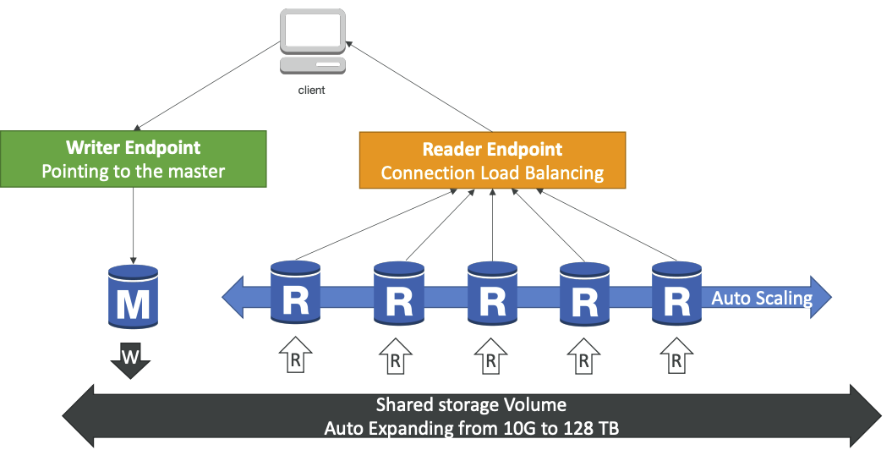
7.2.2. Advanced Concepts
Auto scaling. Read replicas scale based on CPU usage or number of connections breaching a user-defined threshold.
Custom endpoint. Define a subset of the read replicas as a custom endpoint. This means we can route traffic for jobs that we know are database-intensive, like analytical queries, to a subset of the instances without affecting the performance on the other read replicas.
Aurora serverless. Automated database instantiation and auto-scaling based on actual usage.
Good for infrequent, intermittent or unpredictable workloads. No capacity planning needed, you pay per second of usage.
The client connects to a proxy fleet, which is like a load balancer that directs requests to Aurora instances that are scaled in the background.
Global Aurora. Cross-region replicas are useful for disaster recovery. Aurora Global Database is the recommended approach.
You create 1 primary regions for read/write. You can then have up to 5 secondary read-only regions. Replication lag is <1 second. Up to 16 read replicas per secondary region.
Promoting another region in the event of disaster recovery has a Recovery Time Objective (RTO) < 1 minute.
Aurora Machine Learning. Add ML-based predictions to your application via SQL. Supported on SageMaker or Amazon Comprehend.
Babelfish for Aurora PostgreSQL. Babelfish allows Aurora PostgreSQL to understand commands targeted for Microsoft SQL Server (written in T-SQL). It automatically translates between these flavours of SQL to make migration easier.
7.3. Backups and Monitoring
7.3.1. RDS
There are automated backups:
- Full backup daily during the backup window.
- Transaction logs backed up every 5 mins. This gives the ability to do a point-in-time restore.
- 1-35 days of retention. Can be disabled by setting to 0.
Manual DB snapshots are triggered by the user and can be retained as long as you want.
A use case for this is for an infrequently used database. A stopped RDS database will still incur storage costs. If you intend to stop it for a long time, you can snapshot it then restore it later.
7.3.2. Aurora
Automate backups are retained for 1-35 days. Cannot be disabled. Point-in-time recovery for any point in that timeframe.
Manual DB snapshots. Triggered by user and retained for as long as you want.
7.3.3. Restore Options
- Restore an RDS / Aurora backup or snapshot to create a new database.
- Restore a MySQL RDS database from S3. Create a backup of your on-premises database, store it in S3, the restore the backup file on to a new instance running MySQL.
- Restore a MySQL Aurora cluster from S3. Same as for RDS, except the on-premises backup must be created using Percona XtraBackup.
7.3.4 Aurora Database Cloning
Create a new Aurora DB cluster from an existing one. An example use case is cloning a production database into dev and staging.
It is faster than doing a snapshot+restore. It uses the copy-on-write protocol. Initially the clone uses the same data volume as the original cluster, then when updates are made to the cloned DB cluster additional storage is allocated and data is copied to be separated.
7.4. Encryption
Applies to both RDS and Aurora.
At rest encryption. Database master and read replicas are encrypted using AWS KMS. This must be defined at launch time. If master is not encrypted then the read replicas cannot be encrypted. If you want to encrypt and unencrypted database, you need to take a snapshot of it and restore a new database with encryption set up at launch time.
In flight encryption. RDS and Aurora are TLS-ready by default. Applications must use the provided AWS TLS root certificates on the client side.
Authentication can be via IAM or by the standard username/password used to connect to databases. Security groups can also be used to control access. Audit logs can be enabled and sent to CloudWatch Logs for longer retention.
7.5. ElastiCache
7.5.1. What is ElastiCache?
ElastiCache is a managed Redis or Memcached. Analogous to how RDS is a managed SQL database. It is managed, meaning AWS takes care of OS maintenance, configuration, monitoring, failure recovery, backups, etc.
Caches are in-memory databases with low latency. They reduce the load on your database for read-intensive workloads.
This can help make your application stateless. For example, when the user logs in, their session is written to the cache. If their workload is moved to another instance, their session can be retrieved from the cache.
It does, however, require significant changes to your application’s code. Instead of querying the database directly, we need to:
- Query the cache. If we get a cache hit, use that result.
- If we get a cache miss, read from the database directly.
- Then write that result to the cache ready for the next query.
We also need to define a cache invalidation strategy to ensure the data in the cache is not stale.
7.5.2. Redis vs Memcached
Redis replicates whereas Memcached shards.
Redis:
- Multi-AZ with auto-failover
- Read replicas to scale for high availability
- AOF persistence
- Backup and restore features
- Supports sets and sorted sets. Sorted sets allow for things like real-time leaderboards
Memcached:
- Multi-node for partitioning (sharding) data
- No replication (therefore not high availability)
- Not persistent
- Backup and restore available for the serverless option only
- Multi-threaded architecture
7.5.3. ElastiCache Security
ElastiCache supports IAM authentication for Redis. IAM policies on ElastiCache are only used for AWS API-level security.
For Memcached, it needs to be username/password. Memcached supports SASL-based authentication.
With Redis AUTH you can set a password/token when you create a cluster, which provides an extra level of security on top of security groups. It supports SSL in-flight encryption.
Common patterns for ElastiCache.
- Lazy loading - All the read data is cached, but data in the cache may become stale.
- Write through - Data is inserted/updated in the cache any time it is written to the DB. Ensures no stale data.
- Session store - Using the cache to store temporary session data, and using TTL to determine cache validation.
7.5.4. Common Port Numbers
Useful port numbers to know:
- 21 - FTP
- 22 - SFTP, SSH
- 80 - HTTP
- 443 - HTTPS
Common database ports:
- 5432 - PostgreSQL, Aurora
- 3306 - MySQL, MariaDB, Aurora
- 1433 - MySQL Server
- 1521 - Oracle RDS
8. Route 53
8.1. DNS
8.1.1. What is DNS?
Domain Name System (DNS) translates human-friendly hostnames into the machine-friendly IP address. E.g. www.google.com -> 172.217.18.36
There is a hierarchical naming structure separated by ., e.g.
www.example.com
api.example.comTerminology:
- Domain registrar: Amazon Route 53, GoDaddy
- DNS Records: A, AAAA, CNAME
- Zone file: contains DNS records
- Name server: Server that resolves DNS queries
- Top-Level Domain (TLD): .com, .gov, .org
- Second-Level Domain (SLD): google.com, amazon.com
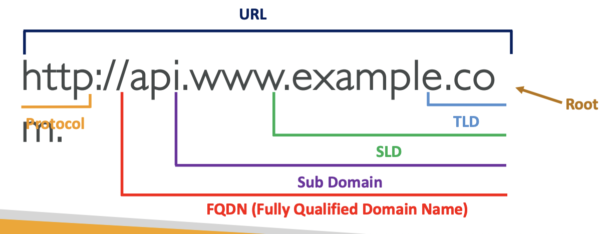
8.1.2. How DNS Works
Your web browser sends a request for www.example.com to a Local DNS Server managed by your company or ISP. This routes to a Root DNS Server managed by ICANN, which resolves the top-level domain (.com) and gives the corresponding IP address for that part. The browser then sends a request to the TLD DNS Server managed by ICANN which resolves the second-level domain. The browser then sends a request to the SLD DNS Server managed by Amazon Registrar etc, and that gives the IP address of the requested website.
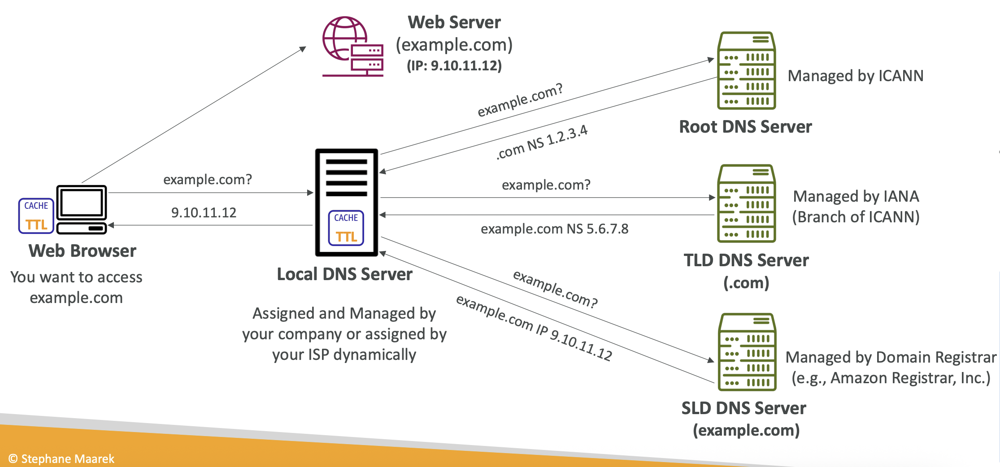
8.2. Route 53
Route 53 is a fully managed authoritative DNS and Domain Regstrar. You can also check the health of your resources. Authoritative means the customer (you) can update the DNS records.
“53” is a reference to the traditional DNS port.
8.2.1. Records
You define records which define how you want to route traffic for a domain. Each record contains:
- Domain/subdomain name - example.com
- Record type - A/AAAA/CNAME/NS
- Value - 12.34.56.78
- Routing policy - how Route53 responds to queries
- TTL - how long this record is cached at DNS resolvers
Record types:
- A - maps a hostname to IPv4
- AAAA - maps a hostname to IPv6
- CNAME - maps a hostname to another hostname. The target is a domain which must have an A or AAAA record.
- NS - Name servers for the hosted zone. These are the DNS names/IP addresses for the servers that can respond to queries for your hosted zone.
8.2.2. Hosted Zones
A hosted zone is a container for records that define how traffic is routed to a domain and its subdomains.
- Public hosted zones - contain records specifying how to route traffic on the internet (i.e. public domain names)
- Private hosted zones - contain records specifying how to route traffic in your VPC (i.e. private domain names)
It costs $0.50 per month per hosted zone.
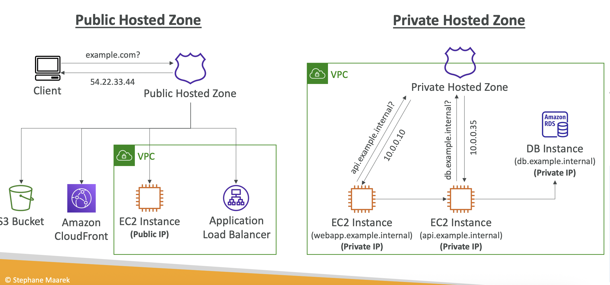
Route 53 UI -> Domains -> Registered Domains
-> Choose a domain name -> Choose duration, auto renew
-> Checkout -> Contact infoNow in Hosted Zones you will see the DNS records created for your domain.
8.2.3. Creating a Record
Route 53 -> Hosted Zones -> Create RecordSpecify the record details discussed previously.
We can take the IP addresses from our EC2 instances, load balancers, etc and route to these as we wish.
8.2.4. TTL
Time To Live (TTL) on a record tells the client how long it should cache the record (i.e. the IP address) before requesting it again. TTL is mandatory for all records except Alias records.
A high TTL (e.g. 24 hours) results in less traffic to Route 53, but clients might possibly have outdated records. A low TTL results in more traffic to Route 53 (and therefore higher costs) but records are more up to date and so easier to change.
A common strategy when you know you are changing your DNS record soon is to temporarily lower the TTL close to the switchover.
8.2.5. CNAME vs Alias Records
Many AWS resources, like ELB and CloudFront, expose an AWS hostname, e.g. blabla.us-east-1.elb.amazonaws.com and we want to map it to myapp.domain.com.
CNAME records allow a hostname to point to any other hostname, but only for a non-root domain.
Alias records point a host name to an AWS resource, and this works for root domains and non-root domains. It is free and has a native health check. It automatically recognises changes in the resource’s IP address. It is always of type A or AAAA, i.e. IPv4 or IPv6. AWS sets the TTL so you can’t set this manually.
Valid Alias record targets: ELB, CloudFront Distributions, API Gateway, Elastic Beanstalk environments, S3 Websites (not buckets), VPC Interface Endpoints, Global Accelerator, Route 53 record in the same hosted zone.
You cannot set an Alias record for an EC2 DNS name.
8.3. Routing Policies
Routing policies define how Route 53 responds to DNS queries.
It isn’t “routing” in the sense of a load balancer; DNS does not route any traffic, it just responds to DNS queries.
Route 53 supports several routing policies:
Simple. Route traffic to a single resource. We can specify multiple values for the same record. The client will pick one of the IP addresses at random. Cannot use with health checks.
Weighted. Control the percentage of requests that go to each resource. We assign each record a relative weight; the DNS records must have the same name and type. Can be used with health checks.
Latency-based. Redirect to the resource with the lowest latency, based on traffic between users and AWS. Can be associated with health checks.
Failover. There is a health checker associated with the primary instance. If this passes, Route 53 returns its IP address to route traffic to it. If unhealthy, it fails over to another instance and returns that IP address.
Geolocation. Routing is based on the user’s location. This is subtly different from the latency-based policy. We can specify location by continent, country or US state. There should be a “default” record in case of no match. Can be used with health checks.
Geo-proximity. Route traffic to your resources based on the geographic location of users and resources. It is like a continuous equivalent of the discrete binning of the geolocation policy. We shift more traffic to resources based on the defined bias - a value between -99 to 99. Resources can be AWS resources (specify AWS region) or non-AWS resources (specify latitude and longitude).
IP-based routing. Routing is based of the clients’ IP addresses. You provide a list of CIDRs for your clients and the corresponding endpoints/locations. These are user-IP-to-endpoint mappings. An example is you route users from a particular ISP to a specify endpoint.
Multi-value. Used when routing traffic to multiple resources; Route 53 returns multiple values. Can be associated with health checks and will only return IP addresses of healthy instances.
It is not a replacement for an ELB. It doesn’t necessarily distribute load evenly, it just gives clients more options and lets them choose.
8.4 Health Checks
HTTP Health Checks are for public resources. We can use them to get automatic DNS failover.
We can use health checks to:
- Monitor resources
- Monitor other health checks. This is called a Calculated Health Check. We can use OR, AND or NOT logic to combine the results of multiple health checks, or specify at least N checks must pass.
- Monitor CloudWatch Alarms. This gives us a workaround to use them for private resources. The health checkers are outside the VPC so cannot access the endpoint directly. Create a CloudWatch Metric with and associated CloudWatch Alarm, and the health checker monitors the alarm.
Route 53 UI -> Health Checks -> Create health checkThere are 15 global health checkers in different regions. They will periodically send HTTP requests to /health and if >18% of them receive a 2xx or 3xx status code the endpoint is healthy. The health checker can use the text in the first 5120 bytes of the response.
You can customise the range of regions to use. You must configure your resource to allow incoming requests from the Route 53 health checker IP range.
8.5. Domain Registrar vs DNS Service
You buy/register your domain name with a Domain Registrar by paying an annual fee. The Domain Registrar usually provides you with a DNS service to manage your DNS records. Examples of domain registars are GoDaddy, Amazon Registrar.
But you don’t have to stick with the same service provider. You could buy a domain from GoDaddy and use Route53 to manage your DNS records. You can create a hosted zone in Route 53 and specify the custom Nameservers to do this.
9. Solutions Architect
9.1. Instantiating Applications Quickly
EC2 instances, RDS databases and other resources take time to boot up. Some common patterns to speed up boot time:
EC2 instances. Use a golden AMI which already has your applications and dependencies installed. Launch your instance from this AMI. You may have some user data or other dynamic data. Use a bootstrap script for these. A hybrid approach is to put as much static logic as possible into the golden AMI and keep the bootstrap script lean.
RDS databases. Restore from a snapshot to quickly recover/resume without having to do lots of slow inserts.
EBS volumes. Restore from a snapshot. The disk will already be formatted and have the correct data.
9.2. Elastic Beanstalk
Many applications will have the same architecture: an ALB with an ASG scaling out the EC2 instances with an RDS database.
The pain points are around managing infrastructure and configuring all of the services each time. Ideally, we would have a single way of doing this rather than repeating the same steps every time.
Elastic Beanstalk is a managed service to handle all of this. It automatically handles scaling, load balancing, health monitoring, configuration. You still have control to configure the resources.
Beanstalk is free, but you pay for the underlying resources (EC2, RDS, ALB, etc).
Components:
- Application - a collection of Elastic Beanstalk components (environments, versions, configurations)
- Application Version - an iteration of your application code
- Environment - a collection of AWS resources running an application version. You can create multiple environments for dev, staging, prod, etc. There are web server and worker environment tiers
Create application -> Upload version -> Launch environment -> Manage environment (upload another version to update it)Beanstalk supports a lot of languages.
9.3. Web Server Environment vs Worker Environment
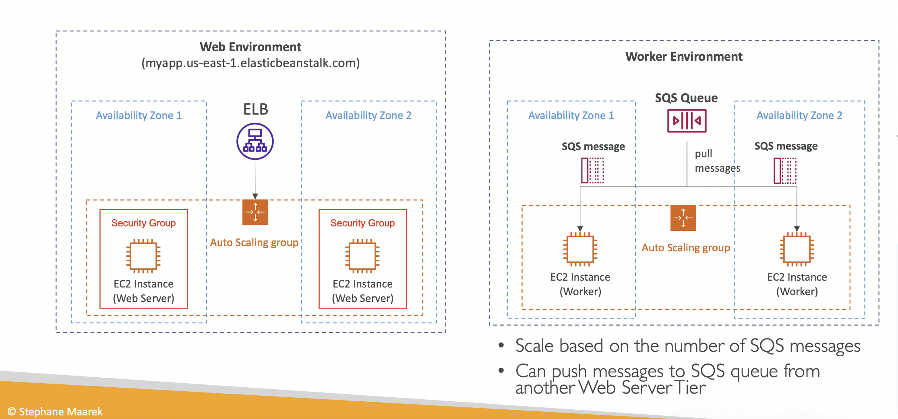
9.4. Deployment Modes
Single instance vs high availability
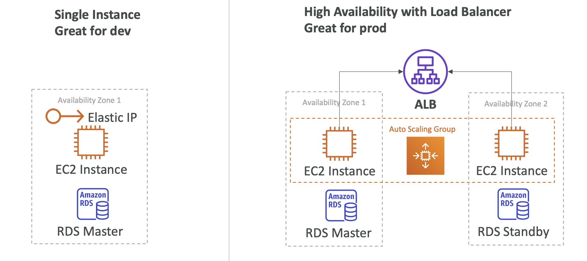
10. S3
## 10.1 S3 Objects and Buckets Simple Storage Service (S3) is used for backup and storage, disaster recovery, archive, hybrid cloud storage, application hosting, media hosting, data lakes and analytics, software delivery, static website.
S3 allows people to store objects (files) in buckets (directories). Bucket names must be unique globally (across all regions and all accounts) even though S3 is a region-specific service.
Buckets. Naming convention: 3-63 characters long, no uppercase or underscore, not an IP address, must start with lowercase letter or number and cannot start with xn–, must not end with -s3alias.
Objects. Objects (files) have a key which is the full path. The key is composed of prefix+object name. S3 does not have a concept of directories, objects are just files with really long keys containing slashes. The UI is misleading as it splits the buckets to look like directories for convenience/familiarity. The max object size is 5TB. Uploads of >5GB must use “multi-part upload”.
Metadata. Objects can contain metadata, a list of key/value pairs for system or user metadata. They can contain tags, up to 10 key/value pairs for security/lifecycle.
10.2. Security
Can be:
- User-based. IAM policies
- Resource-based. Bucket policies (allows cross-account access), Object Access Control List (ACL) for finer grained control, Bucket ACL.
Use bucket policies to grant public access, grant cross-account access, or force encryption for objects at upload. We can use bucket settings or account settings to block public access, if we know that nothing should ever be public so we want to make sure nobody accidentally sets a policy that is too open.
The policies are OR based - a user can access a resource if either the IAM policy or the resource policy allows it, as long as there is not a specific deny.
Objects can be encrypted within S3 as an extra layer of security.
Policies are defined with a JSON. Important keys are:
- Resources: buckets and objects that this policy applies to
- Effect: allow or deny
- Actions: the API actions to allow or deny, like GetObject, ListObjects etc
- Principal: the account/user to apply the policy to
10.3. S3 Website
S3 can host static websites.
We must enable public read access on the bucket, otherwise users will get 403 errors.
10.4. S3 Versioning
You can version files in S3. If we upload a file with the same key, it will increment the version number.
This needs to be enabled at the bucket-level. It is best practice to use versioning for backup and roll back.
- Enabling versioning on an existing bucket will result in
version=nullfor existing objects. - Removing versioning on a bucket will not delete the previous versions on existing objects.
We can delete the newest version if we want to roll back to the previous version.
When we delete an object, we are actually updating it with a “delete marker” version. We can then rollback the delete marker to recover our file.
10.5. Replication
Cross-Region Replication (CRR) and Same-Region Replication (SRR) are used to asynchronously copy data from one bucket to another. They can be in different accounts.
Versioning must be enabled in source and destination buckets, and S3 must have the required IAM permissions.
Use cases:
- CRR. Compliance, lower latency access
- SRR. Log aggregation, sync dev vs prod environments
After you enable replication, only new objects are replicated. To also replicate the history, use S3 Batch Replication. Deletes with delete markers are replicated, but unversioned “permanent” deletes are not replicated to avoid replicating malicious deletes.
You cannot chain replication from Bucket A -> B -> C.
10.6. S3 Storage Classes
Durability represents how often you will lose an object in storage. S3 has 11 9s durability, so if you store 10 million objects you will lose a single object on average once every 10000 years.
This is the same for all storage classes.
Availability is how the uptime of a service. This varies depending on the storage class.
Storage classes:
- S3 Standard: general purpose, infrequent access, one zone infrequent access
- S3 Glacier: instance retrieval, flexible retrieval, deep archive
- S3 Intelligent Tiering: automatically move objects between tiers based on lifecycle policies.
10.7. Lifecycle Rules
You can transition objects between storage classes. This can be done manually, or automated through lifecycle rules.
- Transition actions. Configure objects to transition to another storage class. E.g. standard-IA 60 days after creation or glacier for archiving after 6 months.
- Expiration actions. Configure objects to expire (delete) after a specified period. Can be used to delete old versions of files, called “non-current versions”, if versioning is enabled. Can also be used to delete incomplete multi-part uploads after a certain time has elapsed.
Rules can be created for a certain prefix, or for certain tags.
Amazon S3 Analytics provides storage classes analysis. It gives daily reports with recommendations for transition actions for standard and standard-IA storage classes.
10.8. S3 Requester Pays
Generally, the owner of the bucket pays for storage and data transfer costs.
With Requester Pays buckets, the requester pays the data transfer costs associated with their request. The requester must be authenticated in AWS (they cannot be anonymous).
This is useful when sharing large amounts of data with other accounts.
10.9. S3 Event Notifications
An event can be an object being created, removed, restored, replicated.
You can filter on the object names, e.g. *.jpg
S3 Event Notifications can then be sent to other AWS resources, e.g. EC2, to trigger a downstream workflow. The notifications typically deliver in seconds but can take a minute or more.
The S3 service needs to have the appropriate access policy. To send event notifications to SNS, it needs an SNS Resource Access Policy. For SQS, it needs an SQS resource policy. And for Lambda functions, it needs a Lambda resource policy. Do this in the AWS console for the appropriate service (SNS, SQS, Lambda).
All events, regardless of whether they are going to SNS, SQS, Lambda etc, go via Amazon EventBridge. From here, you can set rules to go to over 18 AWS services as destinations.
EventBridge has filtering options, multiple destinations, and archive and replay capabilities.
10.10 S3 Performance
You can get at least 3500 PUT, COPY, POST, DELETE requests and 5500 GET/HEAD requests per second per prefix in a bucket.
The prefix is everything between the bucket and the file name. Remember S3 isn’t really a file system, it’s an object store, so the prefix is just a long string that happens to have some slashes in, it isn’t actually a hierarchy.
There are no limits to the number of prefixes you can have in a bucket.
Multi-part upload is recommended for files > 100 MB and required for files > 5GB The file is divided into parts and uploaded in parallel.
S3 transfer acceleration increases transfer speed by transferring the file to an AWS edge location and then forwarding it to the target region. So rather than uploading directly to an AZ that is far away, you can upload to your nearest location which is quicker and then transfer between regions using AWS’s private network which is fast. Minimise the time spent on public networks and maximise the time on private networks.
S3 Byte-range fetches parallelises GET requests by requesting specific byte ranges. This also gives better resilience in the case of failures. It can also be used to retrieve partial data, e.g. just the head of a file.
10.11 S3 Batch Operations
Perform bulk operations on existing S3 objects with a single request. A job consists of a list of objects, the action to perform, optional parameters. You can use S3 Inventory to get the object list and use Athena to filter the list.
S3 Batch Operations will manage retries, progress tracking, completion notifications and generate reports.
Common use cases: modify object metadata, copy objects between buckets, encrypt objects, modify tags, restore objects from S3 Glacier, invoke a Lambda function to perform custom actions on each object.
10.12 S3 Storage Lens
Analyse storage across the entire organisation. It can identify anomalies and cost efficiencies.
It aggregates data for an organisation, or specific accounts, regions, buckets or prefixes.
You can use this to create a dashboard or export metrics as a CSV file to an S3 bucket. There is a default dashboard and you can create your own custom dashboards.
Available metrics:
- Summary metrics. Storage bytes, object count
- Cost-optimisation metrics. Non-current version storage bytes, incomplete multi part upload storage bytes.
- Data protection metrics. Version-enabled bucket count, MFA enabled bucket count, KMS-enabled bucket count, cross-region replication rule count.
- Access management metrics. Object ownership bucket owner enforce bucket count.
- Event metrics. Insights for S3 Event notifications, number of buckets with S3 events enabled.
- Performance metrics. Transfer acceleration enabled bucket count.
- Activity metrics. Number of requests, split get get vs put vs list etc, bytes downloaded.
- Status code metrics. Count of 200 status codes, 403, 404 etc.
Some metrics are free and some are paid. Under the free tier, metrics are available for 14 days. For paid, it is available for 15 months and automatically published to CloudWatch.
11. S3 Security
11.1. Object Encryption
Object encryption can either be server-side or client-side.
- Server-Side Encryption (SSE). Can manage keys using S3-managed keys (SSE-S3), KMS (SSE-KMS) or customer-provided keys (SSE-C).
- Client-Side Encryption.
SSE-S3 is enabled by default for new buckets and objects. SSE-KMS allows usage statistics of keys to be tracked using CloudTrail. Each write and read using these keys will could towards your KMS APi usage. This can result in throttling if uploading lots of data. SSE-C requires the key to be provided in the header directly when uploading or downloading data. You can only use this from the CLI, not from the AWS console UI.
The option used is specified in the header when uploading the object.
For client-side encryption, the customer manages the keys and encryption themselves. Client must encrypt data before sending it to S3 and decrypt data when retrieving it. You handle this yourself and don’t need to specify this in the S3 encryption settings.
Encryption in transit is also called SSL/TLS. Amazon S3 exposes two endpoints: HTTPS which is encrypted in transit and HTTP which is not. HTTPS is recommended.
Encryption in transit and/or server-side encryption can be enforced using a bucket policy. Bucket policies are evaluated before “Default Encryption“ settings for the bucket.
11.2. CORS
Cross-Origin Resource Sharing (CORS).
Origin = scheme (protocol) + host (domain) + portUsing https://www.example.com The port is implied by HTTPS (443) or HTTP (80). The scheme is www and the host is example.com
So these have the same origin:
- http://www.example.com/app1
- http://www.example.com/app2
These have different origins:
- http://www.example.com
- http://api.example.com
CORS is a web-browser based mechanism to allow requests to other origins while visiting the main origin. The other origin must allow for requests using CORS Headers.
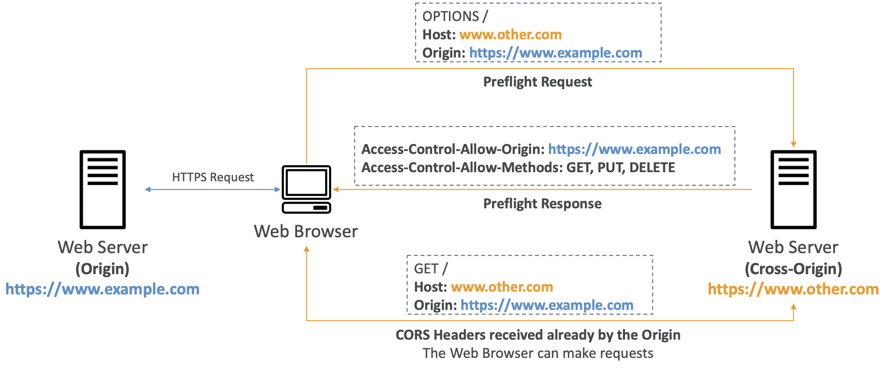
We make a request to a web server, and it routes us to another server in a different region, for example to retrieve some images on the page.
On S3, if a client makes a cross-origin request on our S3 bucket, we need to enable the correct CORS headers. For example, if we are hosting a static website on S3 which contains images stored on a different S3 bucket; the image bucket must have the correct CORS headers enabled to fulfil the request. You can allow a specific region or * for any region.
11.3. MFA Delete
We can force users to authenticate with MFA when doing potentially destructive actions on the bucket, e.g. permanently deleting an object version or SuspendVersioning on the bucket. Only the bucket owner (root account) can enable/disable MFA Delete.
MFA won’t be required to enable versioning or list deleted versions.
11.4 S3 Access Logs
For audit purposes, you can log access requests to a particular S3 bucket, whether authorised or denied.
The logs are written to another S3 bucket; the target logging bucket must be in the same region. Never set the logging bucket to be the monitoring bucket! Otherwise you will create an infinite loop and rack up AWS costs.
11.5. Pre-signed URL
Users given a pre-signed URL inherit the permissions of the user that generated it for GET/PUT requests.
They can be generated in the AWS console, CLU or SDK. The expiration time can be 1 minute to 168 hours.
Within S3 console -> Find the object -> Object actions -> Share with pre-signed URL11.6. S3 Glacier Vault Lock
This allows us to adopt a Write Once Read Many (WORM) model, which is helpful for compliant and data retention.
We create a Vault Lock Policy, which means the object cannot be deleted by anyone, and the policy itself cannot be edited.
11.7. S3 Object Lock
S3 Object Lock is a similar idea but less restrictive. Again you can adopt a WORM model, but it is for specific objects for a specified amount of time. So you can block object deletion. The retention period must be set when creating the lock.
There are two retention modes:
- Compliance. Object versions cannot be overwritten or deleted by anyone user, even the root user. The retention modes cannot be edited once set. This is similar to vault lock and is the strictest setting.
- Governance. Most users cannot overwrite or delete objects or change the lock settings, but some users have special permissions to override this.
A third option is legal hold which protects an object indefinitely, independent of the retention period. Only users with the s3:PutObjectLegalHold IAM permission can add or remove legal holds on objects.
11.8. S3 Access Points
This is a more granular control over permissions at the prefix level rather than the bucket policy.
Say we have a bucket which has folders for multiple departments: finance, sales, analytics. We want to make sure each department can only access their folder. We could define a complicated bucket policy to enforce this.
A convenient alternative is to define a Finance Access Point for that folder, a Sales Access Point for that folder, etc.
Each access policy looks similar to a bucket policy — it is a JSON document with the same keys — but it applies to a prefix. Each access point has its own DNS name and access point policy.
We can restrict the access point to only be accessible from within the VPC. You must create a VPC Endpoint to connect to the Access Point, and define a VPC Endpoint Policy that allows access to the Access Point and target bucket.
11.9. S3 Object Lambda
This allows us to transform an object as it is loaded.
Say you want multiple versions of a file: the original, a redacted version for customers, an enriched version for the sales department.
We could store 3 different variations of each file. But this is an inefficient use of storage.
We can create a lambda function for each transformation and apply it at read time before it reaches the user. Only one S3 bucket is needed, on which we create an S3 Access Point and multiple S3 Object Lambda Access Points.
12. CloudFront
12.1 CloudFront Overview
CloudFront is a Content Delivery Network (CDN). It improves read performance by caching content at the edges, at 216 points of presence globally. I this protects against DDoS attacks.
12.2. Origin
CloudFront can have different origins:
- S3 bucket. For distributing files and caching them at the edge. Secured using Origin Access Control (OAC).
- VPC Origin. For applications hosted in VPC private subnets - ALB, EC2 instances. CloudFront creates a VPC Origin inside the VPC and communicates with that. The old deprecated method was to create a public EC2 instance or ALB and attach a security group that only allowed access from the public IP addresses of the edge location; this is more error prone and less secure.
- Custom origin. Any public HTTP backend.
The client requests data from the edge location. If the data is cached, return it. Otherwise, fetch it from the origin and cache it at that edge location ready for any future requests.
CloudFront differs from S3 Cross-Region Replication, but naively seems similar in principle. CloudFront caches across the global edge network (there is no region selection) and only caches files for the TTL (short lived). Good for static content that must be highly available.
S3 Cross-Region Replication must be set up for each region you want replication to happen in, and files are updated in near real-time. Good for dynamic content that needs to be available in a small number of regions at low latency.
12.3. CloudFront Geo Restriction
You can restrict who can access your distribution based on location. You define an Allowlist or Blocklist to allow/block access to content is the user is in a particular country. The country is determined using a 3rd party Geo-IP database.
A use case is to enforce copyright laws based on country.
12.4. Price Classes
The cost of data out per edge location varies.
You can reduce the number of edge locations for cost reduction. There are three price classes:
- Price Class All. All regions, best performance but most expensive.
- Price Class 200. Most regions but excluding the most expensive.
- Price Class 100. Only the cheapest regions.
12.5. Cache Invalidation
If you update the content on the backend origin, the CloudFront edge location will only get the refreshed content after the TTL expires.
You can force an entire or partial cache refresh by performing a CloudFront Invalidation. You pass in a file path. This can be all files * or a specific folder /images/*.
It essentially tells the edge location that the content isn’t there, so the next user that requests the data will get a cache miss and go to the origin. Note that it doesn’t refresh the data per se, it invalidates the data and it’s only when the next user makes a request that the edge location retrieves the updated content.
12.6 AWS Global Accelerator
The problem AWS Global Accelerator is solving is you have an application deployed in one region, say an ALB, but your traffic is global. So some users in faraway locations have many hops before reaching our content. We want to go through the AWS network as soon as possible to minimise latency.
12.6.1. Unicast IP vs Anycast IP
Unicast is what we’re typically familiar with. Each server holds one IP address.
With Anycast IP, all servers hold the same IP address, and the client is routed to the nearest one. This is how AWS Global Accelerator works.
12.6.2. How Global Accelerator Works
There is a server at each edge location. Anycast IP sends traffic directly to the nearest edge location. The traffic is then routed along AWS’s private network which is faster than over public internet.
Two Anycast IP addresses are created for you application. It works with Elastic IP, EC2 instances, ALB, NLB, and can be public or private. It is helpful for security too because there are only two IP addresses that clients need to whitelist, but with the benefit of being globally available.
12.6.3. Global Accelerator vs CloudFront
CloudFront is caching data. A server at the edge location stores a cached version of your data and serves this to clients.
Global Accelerator is simply routing traffic through AWS’s private network, there is no caching. The clients request is routed to the nearest edge location then directly to the origin through the AWS network.
13. AWS Storage Extras
13.1. AWS Snowball
Snowball is a device that allows you to collect and process data at the edge, and migrate data in and out of AWS. You receive physical Snowball device that you upload data on to locally and then ship it to AWS.
When performing data migrations of large amounts of data or over a slow connection (over a week of transfer time), AWS Snowball is recommended.
Another use case is edge computing, where we want to process data at an edge location (e.g. a truck or a ship) that has limited internet or compute power.
In the UI, you specify the your shipping address and the S3 bucket you want the data uploaded to once AWS receive it, and they will post you a Snowball device.
A common user story is you want to upload data from the Snowball device directly in to Glacier. This is not possible, so the workaround is to upload into S3 and have a lifecycle policy on the bucket which transitions the data into Glacier.
13.2 Amazon FSx
FSx allows you to launch third-party file systems on AWS as a fully managed service.
Analogous to how RDS allows you to run third party databases like MySQL, PostgreSQL etc as a managed service. FSx is the equivalent for file systems.
FSx for Windows File Server is a fully managed shared drive. It supports Active Directory integration. Despite it being windows, it can also be mounted on Linux EC2 instances. There are SSD or HDD storage options. Data is backed up to S3 daily.
FSx for Lustre is a parallel distributed file system. The name is derived from “Linux cluster”. It is used for high performance computing (HPC), ML, video processing. Storage options can be SSD or HDD. There is integration with S3 so you can read S3 as if it were a file system and write data back to S3.
FSx for NetApp ONTAP. Scaled automatically and there is point in time instantaneous cloning which is helpful for testing new workloads.
FSx for OpenZFS. Managed OpenZFS file system. Good for snapshots, compression and low cost, but no data duplication.
There are two file system deployment options for FSx:
- Scratch file system. Temporary storage. Data is not replicated but throughput is high.
- Persistent file system. Long term storage replicated within the same AZ. Failed files are replace within minutes.
13.3. Storage Gateway
Hybrid cloud for storage. Some infrastructure on-premises and some on cloud. This can be due to: long cloud migrations, security requirements, compliance requirements, IT strategy
AWS Storage Gateway is a way to expose S3 on premises.
The cloud native options are:
- Block store. EBS, EC2 instance store
- File storage. EFS, FSx
- Object storage. S3, Glacier
Types of Storage Gateway:
S3 file gateway. Allows our on premises to access our S3 bucket. The application server communicates with S3 file gateway via NFS or SMB. S3 file gateway communicates with S3 via HTTPS. The most recently used data is cached in the file gateway. Data can then be transferred to Glacier using a lifecycle policy. IAM roles must be created for each gateway.
FSx file gateway. Local cache for frequently accessed data.
Volume gateway. Block storage backed by EBS snapshots. Cached volumes allow low latency access to most recent data. Entire data set is stored on premise and there are scheduled backups to S3.
Tape gateway. For companies with backup processes using physical tapes. With tape gateway, companies can use the same process but in the cloud.
Storage gateway - hardware appliance. A physical appliance that Amazon post to you which works with file gateway, volume gateway, tape gateway.
13.4. AWS Transfer Family
A managed service for FTP file transfers in and out of S3. Supports FTP, FTPS, SFTP.
Pay per provisioned endpoint per hour + data transfer in GB.
13.5. AWS DataSync
Move large amounts of data to and from:
- On-premises -> AWS
- AWS -> AWS
Can sync to: S3, EFS, FSx. It can work in either direction.
Replication tasks can be scheduled hourly, daily, weekly; it is not continuous/ instantaneous. File permissions and metadata are preserved - DataSync is the only option that does this.
AWS Snowcone comes with a DataSync agent pre-installed. It can be used on premises to sync to the cloud.
13.6. Comparison of Storage Options
- S3: Object Storage
- S3 Glacier: Object Archival
- EBS volumes: Network storage for one EC2 instance at a time
- Instance Storage: Physical storage for your EC2 instance (high IOPS)
- EFS: Network File System for Linux instances, POSIX filesystem
- FSx for Windows: Network File System for Windows servers
- FSx for Lustre: High Performance Computing Linux file system
- FSx for NetApp ONTAP: High OS Compatibility
- FSx for OpenZFS: Managed ZFS file system
- Storage Gateway: S3 & FSx File Gateway, Volume Gateway (cache & stored), Tape Gateway
- Transfer Family: FTP, FTPS, SFTP interface on top of Amazon S3 or Amazon EFS
- DataSync: Schedule data sync from on-premises to AWS, or AWS to AWS
- Snowcone / Snowball / Snowmobile: to move large amount of data to the cloud, physically
- Database: for specific workloads, usually with indexing and querying
14. Messaging and Integration
Our applications may need to communicate with one another.
There are two main patterns:
- Synchronous communication. Application to application. This can be problematic if there are sudden spikes of traffic; the solution is to decouple applications.
- Asynchronous communication (event-based). Application to queue to application.
Options for decoupling synchronous applications:
- Using SQS. Queue model.
- Using SNS. Pub/sub model.
- Using Kinesis. Real-time streaming model.
14.1. Simple Queuing Service (SQS)
14.1.1. Overview
A producer sends messages to a queue. A consumer polls the queue for messages. The queue essentially acts as a buffer between producer and consumer.
Standard queue. Unlimited throughput and number of messages in queue. Messages are short-lived; they can stay in the queue for 14 days maximum, and this is set to 4 days by default. The latency is low, <10ms on publish and receive. Messages can be 256 KB maximum. It uses “at least once delivery” so it is possible to have multiple messages in the queue, and messages may be out of order (best effort ordering), so the application should be able to handle this.
Producing messages. The application code sends a message to the queue using the
SendMessageAPI in the AWS SDK. The message is persisted in SQS until a consumer deletes it, or the retention period is reached.Consuming messages. The application code may be running on premises or in AWS. The consumer polls SQS for messages (up to 10 at a time). Once the consumer processes the message, it deletes the message from the queue using the DeleteMessage API.
Encryption. Inflight encryption using HTTPS API. At rest encryption using KMS keys. You can use client-side encryption if the client wants to handle encryption/decryption itself.
IAM policies regulate access to the SQS API (SendMessage and DeleteMessage). SQS Access Policies can be used for cross-account access to SQS queues or allowing access from other services like SNS or S3; analogous to S3 bucket policies.
14.1.2. Message Visibility Timeout
After a message is polled by a consumer, it becomes invisible to other consumers. This ensures that multiple consumers do not try to process the same message.
By default, the visibility timeout is 30 seconds, so consumers have 30 seconds to process the message before it “rejoins” the queue.
If a consumer is processing a message but knows that it needs more time, it can call the ChangeMessageVisibility API to get more time. This is helpful to ensure a message isn’t processed twice.
The value of the timeout should be high enough to avoid duplicate processing from multiple consumers, but low enough that if a consumer crashes then the message is made available on the queue again in reasonable time.
14.1.3. Long Polling
When a consumer requests messages from the queue, it can optionally wait for messages to arrive if there are none in the queue. This is “long polling”.
This reduces the number of API calls made to SQS and improves the latency of the application.
The long polling wait time can be 1-20 seconds.
Long polling can be enabled either at the queue level or the API level using WaitTimeSeconds.
14.1.4. FIFO Queues
First In First Out ordering of messages. FIFO queues guarantee the order of messages at the expense of limiting throughput.
Messages are processed in order by the consumer. Ordering is done by Message Group ID which is a mandatory parameter.
FIFO queues also support “exactly-once” send capability. You add a unique Deduplication ID to each message.
The queue name when you create it must end in .fifo
14.1.5. SQS with ASG
To increase throughput, we can scale the number of consumers horizontally.
A common pattern is to have EC2 instances as the consumers which are inside an Auto Scaling Group. There is a CloudWatch metric monitoring the queue length, and the ASG scales the number of instances based on that CloudWatch alarm.
Another common pattern is to use SQS as a buffer between EC2 instances and the database to ensure no data is dropped. If the EC2 instances are writing directly to the database, they may hit the write limit and lose data. SQS is added as an intermediate step. EC2 publishes to the SQS queue which is infinitely scalable to ensure no data is dropped. Then a different EC2 instance in a different ASG acts as the consumer to pick up messages and write them to the database in a durable way. This pattern only works if the client does not need write confirmation.
14.2. Simple Notification Service (SNS)
14.2.1. Overview
SNS allows you to send one message to many receivers using the pub/sub pattern. A publisher publishes a message on an SNS topic and various subscribers can read the message and act accordingly.
An “event producer” sends a message to one SNS topic. Many “event receivers” can listen for topic notifications. By default, subscribers see all messages but you can filter this.
You can have up to 12.5 million subscriptions per topic. An account can have up to 100k topics.
Subscribers can be: SQS, Lambda, Kinesis Data Firehose, emails, SMS and push notifications, and HTTP(S) endpoints.
SNS can receive data from many AWS services.
To publish from SNS, there are two options:
- Topic publish using the SDK
- Direct publish using the mobile apps SDK
Security for SNS is similar to SQS:
- in flight encryption using HTTPS
- At rest encryption using KMS keys
- Client side encryption if the client wants to handle encryption/decryption themselves
IAM policies regulate access to the SNS. SNS Access Policies can be used for cross-account access to SNS topics or allowing access from other services like S3; analogous to S3 bucket policies and SQS Access Policies.
14.2.2. Fan Out Pattern
This is a common SQS + SNS pattern. We may want to publish a message to multiple SQS queues. We can decouple this using the fan out pattern, so the application code doesn’t need to be changed for every added/removed queue.
We push once to SNS and let all of the SQS queues subscribe to that SNS topic.
Make sure the SQS queue access policy allows for SNS to write. There is cross-region delivery, meaning an SNS topic can be read by multiple SQS queues in different regions.
Another application is S3 + SNS + SQS. S3 has a limitation that you can only have one S3 Event rule per event type, prefix combination. If you want to send the same S3 event to multiple queues, publish it to SNS and let that fan out to the different SQS queues.
SNS can write to S3 (or another destination supported by KDF) by going via Kinesis Data Firehose.
Like SQS, we can have an SNS FIFO topic to ensure ordering. Again, we order by message group ID and pass a Deduplication ID. This is helpful if fanning out to SQS FIFO queues.
14.2.3. Message Filtering
This is an optional JSON policy applied to a subscriber to only filter on some messages. Useful if we want one queue to handle orders, one for cancellations etc.
14.3. Kinesis Data Streams
KDS used to Collect and store real-time streaming data.
A producer is application code that you write, or a Kinesis Agent if connecting to an AWS service, which writes to a Kinesis Data Stream.
A consumer is an application that can read from the data stream. Example consumers may be: your application, Lambda functions, Amazon Data Firehose, managed service for Apache Flink.
Data is retained on the data stream for up to 365 days which allows consumers to “replay” data. Data cannot be deleted from Kinesis, you have to wait for it to expire.
Data cannot be up to 1 MB; a typical use case is lots of “small” realtime data. Ordering is guaranteed for data with the same partition ID.
Encryption - KMS at-rest and HTTPS in-flight.
We can write optimised producers and consumers using Kinesis Producer Library and Kinesis Client Library respectively.
There are two capacity modes:
- Provisioned mode. You define the number of shards. Each shard allows for 1 MB/s in and 2 MB/s out. You can manually increase or decrease the number of shards and you pay per shard per hour.
- On-demand mode. No manual intervention required. You start with the default capacity (4 shards) which scales automatically based on observed throughput peak during the last 30 days. You are billed per stream per hour and for each GB in and out.
14.4. Amazon Data Firehose
14.4.1. Overview
Producers send records (up to 1 MB of data) to Firehose. They can optionally be transformed by a lambda function. Data is accumulated in a buffer and written as batches to a destination; therefore it is “near real time” since there is a lag between flushes of the buffer. You can optionally write all data or just failed data to an S3 backup bucket.
The buffer can be set to flush based on a storage limit (GB accumulated) or a time limit; it will be flushed when the first of these limits is hit.
It is a fully managed service, serverless with auto scaling. Supported file types: CSV, JSON, Parquet, Avro, raw text, binary data. It used to be called “Kinesis Data Firehose” but was renamed because it is more generally applicable beyond just Kinesis.
Producers can be applications, clients, SDK, Kinesis Agents, Kinesis Data Streams, CloudWatch logs and events, AWS IoT.
Destinations can be AWS destinations: S3, Redshift, OpenSearch. Or third party destinations: Datadog, Splunk, New Relic, MongoDB. Or you can write to custom destinations via an HTTP endpoint.
14.5. Comparison of Messaging and Integration Services
14.5.1. Kinesis Data Streams vs Amazon Data Firehose
Firehose does not store any data or allow for replay. There is a lag so it is not fully real time, unlike Kinesis data streams.
Firehose automatically scales, whereas Kinesis data streams allow a self-managed (provisioned mode) or fully managed (on demand mode) option.
14.5.2. SQS vs SNS vs Kinesis
- SQS - consumers pull data and delete it from the queue. You can have as many consumers as you want. No need to provision throughput.
0 SNS - producers push data. Data is not persisted, so data can be lost if not delivered. No need to provision throughput.
- Kinesis - the standard approach is to pull data, but this can be adapted to push data using the fan-out pattern. Data is persisted so can be replayed. There are two modes to self-manage or auto-scale.
14.6. Amazon MQ
Amazon MQ is a managed message broker service for RabbitMQ and ActiveMQ. It has both queue feature and topic feature, so can be made to be roughly equivalent to SQS and SNS respectively.
If you are already using RabbitMQ or ActiveMQ on premises, it may be easier to migrate to Amazon’s managed service.
SQS and SNS are “cloud-native” services, proprietary from AWS. Amazon MQ doesn’t scale as well as the cloud-native services.
It is essentially a halfway house for cases where you can’t / don’t want to migrate your whole application to use SQS/SNS but want some cloud features.
For high availability, you can have MQ Brokers in two different AZs, one as active and one as failover. Both write to the same Amazon EFS storage volume so that no data is lost in the event of a failover.
15. Containers on AWS
15.1. Docker
Use Docker to containerise applications. Common use cases are for microservices or to “lift and shift” and app from on-premises to cloud.
Docker images are stored in a container repository. Docker Hub is a common public repository, AWS ECR is private (although there is “public gallery” if you want to make images in ECR public).
Docker vs virtual machines: 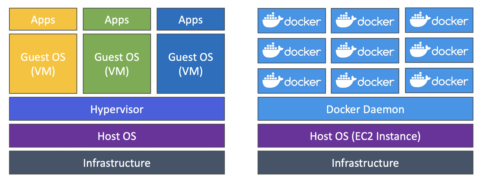
AWS container services: ECR, ECS, EKS, Fargate.
15.2. ECS
Elastic Container Service. This is Amazon’s managed container service. You launch an ECS Task on an ECS Cluster.
There are two launch types: EC2 and Fargate.
15.2.1. EC2 Launch Type
An ECS cluster is essentially an cluster of EC2 instances each running an “ECS Agent”, which is essentially Docker and logic to register them as elements of the ECS cluster so AWS knows to start/stop/update containers within them.
With an EC2 launch type, you need to manage the infrastructure yourself, ie define the instance size, number, etc.
15.2.2. Fargate Launch Type
Serverless service. You don’t provision the infrastructure so no need to manage EC2 instances.
You just create task definitions and AWS runs ECS Tasks for you based on the CPU/RAM needed. To scale, just increase the number of tasks.
There are two categories of IAM roles needed:
- EC2 Instance Profile (only for EC2 launch type). Used by the ECS Agent to make API called to the ECS service, pull images from ECR, send container logs to CloudWatch, get credentials from Secrets Manager of SSM Parameter Store. The IAM profile needs access to all of these services.
- ECS Task Roles. Allows each task to have a specific role. Eg task A might only need access to S3, task B might only need access to RDS.
We can run an ALB in front of the ECS Cluster.
For data persistence, we need a volume. EFS file systems can be mounted onto ECS tasks, and this works with both EC2 and Fargate launch types. EFS is serverless. EFS is a network drive, so tasks running in any AZ will share the same data. S3 cannot be mounted as a file system for ECS tasks.
15.2.3. ECS Service Auto Scaling
Automatically increase/decrease the number of ECS tasks. ECS Auto Scaling uses AWS Application Auto Scaling to scale based on: CPU utilisation, RAM utilisation or ALB request count per target.
There are three types of scaling:
- Target tracking - based on a target value for a specific CloudWatch metric
- Step scaling - based on a CloudWatch alarm
- Scheduled scaling - based on a date/time
EC2 Service Auto Scaling is scaling the service (at the task level). It is not the same as EC2 Auto Scaling which is at the instance level. Fargate auto scaling is easier to set up because it is serverless.
ECS Cluster Capacity Provider is the preferred approach to scaling. It is a capacity provider paired with an auto scaling group.
You can use Auto Scaling Group Scaling, but this is the older discouraged method.
15.2.4. Common ECS Architectures
Amazon EventBridge can have a rule set up to run an ECS task in response to a trigger. For example, when a user uploads a file to a specific S3 bucket, EventBridge will start an ECS task inside a Fargate container to process the data and write it to RDS.
A similar approach is to use EventBridge to do the same but on a schedule, e.g. every hour do some batch processing.
Another scenario is processing messages in an SQS queue. ECS tasks poll the queue and auto scale depending on the number of items in the queue.
Another scenario is having EventBridge monitor the ECS task and trigger an event if the task fails or is stopped. It sends the event to SNS which emails the Ops team.
15.3. ECR
Elastic Container Registry. Store and manage docker images on AWS. It is integrated with ECS and backed by S3 under the hood. Access is controlled by IAM.
Images can be public or private. Public images are stored in Amazon ECR Public Gallery.
15.4. EKS
Elastic Kubernetes Service. Managed Kubernetes clusters on AWS. Kubernetes is cloud-agnostic, so can be helpful when migrating between cloud providers.
Like ECS, it supports EC2 and Fargate launch types.
Node types:
- Managed node groups. AWS creates and manages nodes (EC2 instances) for you. These can be spot or on demand instances.
- Self-managed nodes. You create the nodes and register them to an EKS cluster.
- AWS Fargate. Serverless, no maintenance required.
You can attach data volumes by specifying a StorageClass manifest on your EKS cluster and using a Container Storage Interface (CSI) driver. EKS supports EBS, EFS and FSx; Fargate can only use EFS.
15.5. AWS App Runner
Managed service to make it easy to deploy web apps and APIs. You pass it your source code or container images and configure some settings like number of vCPUs, RAM, auto scaling, health checks etc. AWS creates all of the services under the hood, you don’t need any infrastructure experience. It is the easiest option to get something running without much cloud knowledge.
15.6. AWS App2Container (A2C)
A2C is a CLI tool for migrating Java and .NET containers into Docker containers. Lift and shift from on-premises to cloud.
It generates CloudFormation templates and registers the Docker containers to ECR. You can then deploy to ECS, EKS or AppRunner.
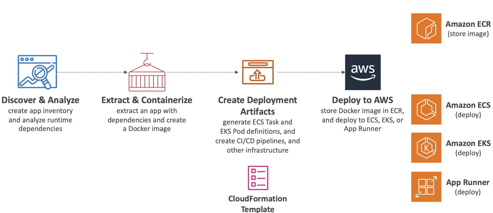
16. Serverless
“Serverless” is a bit misleading: there are still servers behind the scenes, you just don’t manage the servers yourself.
It was originally branded as Function as a Service (FaaS) but now includes any managed service: database, messaging, storage, etc.
Serverless services in AWS: Lambda, DynamoDB, Cognito, API Gateway, S3, SNS and SQS, Kinesis Data Firehose, Aurora Serverless, Step Functions, Fargate.
16.1. AWS Lambda
16.1.1. Overview
Lambdas are virtual functions; there are no servers to manage. Execution time must be <15 mins. They run on-demand; you are only billed when your function is running. Scaling is automated.
Lambdas are the serverless counterparts to EC2 instances. With EC2 instances you need to intervene to scale up and down.
There is integration with CloudWatch for monitoring. You can have up to 10GB of RAM per function; increasing the RAM also improves the CPU and networking.
Lambda pricing is pay per request and compute time.
Supported languages: JavaScript, Python, Java, C#, Ruby. Other languages are supported via a custom runtime API.
You can have Lambda Container Images which must implement the Lambda Runtime API. Generally, ECS or Fargate are preferred for running arbitrary Docker images.
A common pattern is to use Lambda to create a “serverless CRON job”. CloudWatch Events triggers an event on a schedule, say every hour. This triggers a Lambda function to run a certain task.
16.1.2. Lambda Limits
These limits are per region.
Execution:
- Memory allocation - 128MB-10 GB in 1MB increments
- Max execution time is 15 minutes
- Environment variables can take up to 4 KB
- Disk capacity in /tmp - 512 MB to 10GB
- Concurrency executions: 1000
Deployment:
- Deployment size (compressed zip) 50 MB, uncompressed 250 MB
- Can use
/tmpdirectory to load other files at startup - Environment variables 4KB
16.1.3. Lambda Concurrency and Throttling
Concurrency limit: up to 1000 concurrent executions across all Lambda functions in our account.
We can set a “reserved concurrency” at the function-level to limit calls to individual Lambda functions. It is good practice to do this so that one application in your account scaling does not cause it to use all of the available Lambda functions in your account and cause unrelated Lambda functions for other applications to be throttled.
Each invocation over the concurrency limit triggers a “throttle”. For synchronous invocations, this returns a 429 ThrottleError. For asynchronous invocations, it will retry automatically for up to 6 hours with exponential backoff and then go to a dead letter queue.
16.1.4. Cold Starts
When a new instance is starting, it needs to initialise by running all of the code and dependencies. This can take a long time, causing the first request to a new instance to have higher latency than the rest.
Provisioned concurrency is allocated before the function is invoked to avoid cold starts.
16.1.5. Lambda SnapStart
When a regular Lambda function is invoked the lifecycle it goes through is: initialise, invoke, shutdown.
When SnapStart is enabled, the function is pre-initialised so it can skip straight to the invoke stage.
When you publish a new version: lambda initialises your function, takes a snapshot of memory and disk state, then that snapshot is cached for low-latency access.
16.1.6. Customisation at the Edge
Some applications may require some form of logic at the edge location, e.g. to customise the CDN content.
An edge function is code that you write and attach to CloudFront distributions. It runs close to the user to minimise latency.
CloudFront provides two types:
- CloudFront Functions
- Lambda@Edge
Both are serverless and deployed globally. You only pay for what you use.
CloudFront Functions
These are JavaScript functions that modify the response sent from CloudFront to the user. They can change the viewer request (what the user sends to CloudFront before it reaches the origin server) or the viewer response (what the origin server sends back before it reaches the user).
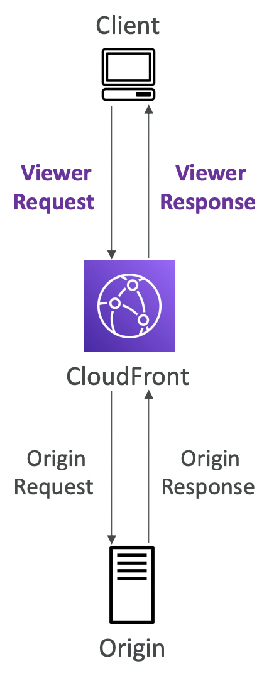
Lambda@Edge
This can modify viewer request/ response or origin request/response. You write the function in one region (us-east-1) then CloudFront replicates it across all regions. The function can be written in node.js or Python.
It is more expensive with a higher max execution time, so you can run more logic.
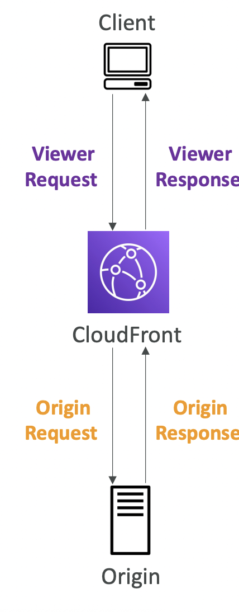
Comparison
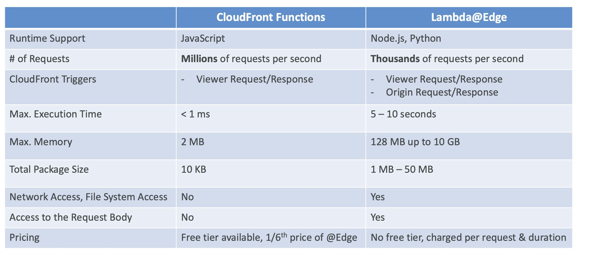
Use cases of CloudFront Functions:
- Cache key normalization
- Header manipulation
- URL rewrites or redirects
- Request authentication & authorization
Use cases of Lambda@Edge Functions:
- Longer execution time (several ms)
- Adjustable CPU or memory
- Your code depends on a 3rd-party libraries (e.g., AWS SDK to access other AWS services)
- Network access to use external services for processing
- File system access or access to the body of HTTP requests
16.1.7. VPC
By default, Lambda launches in its own AWS-owned VPC, so can only access public resources and not the resources in your VPC.
We can launch Lambda in a VPC if we specify the VPC ID, subnets and security groups. Lambda will create an ENI in your subnets.
Lambda with RDS Proxy
A common use case for launching lambda in your VPC is to connect to your RDS database. But we don’t want to connect Lambdas directly to RDS, as this can result in lots of open connections and high load.
Instead the Lambda functions connect to an RDS proxy which pools and shares database connections.
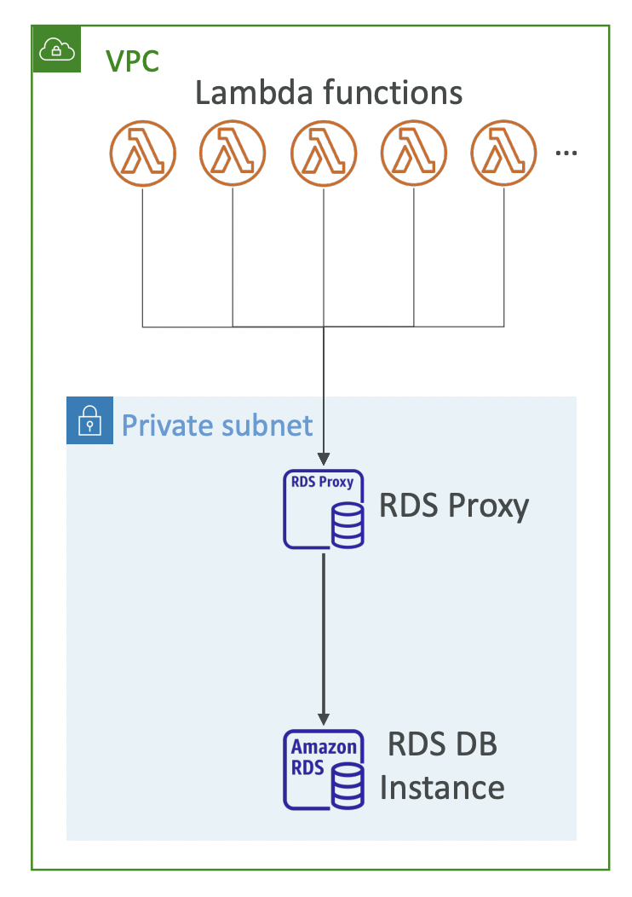
This requires running Lambda in a VPC because the RDS Proxy is never publicly accessible.
Invoking a Lambda Function from RDS
You can invoke a Lambda function from within your database instance to process data events from within the database.
You need to allow outbound traffic to the Lambda function from within the DB instance. This is done in the database, not the AWS console.
This should not be confused with RDS Event Notifications. These tell you information about the database instance, not the data itself. So you can see when the database was created, stopped, started etc. But you cannot see anything about the data itself is actually processing.
16.2. DynamoDB
16.2.1. Overview
Fully managed NoSQL database with replication across multiple AZs. It is a good choice if the schema needs to change frequently.
Security is all handled via IAM.
DynamoDB auto-scales and has fast (single digit milliseconds) performance.
There are two classes: standard and infrequent access.
DynamoDB is made of tables. Each table must have a primary key, and can have an infinite number of items (rows). Each item has attributes (columns). These can be added to over time without having to alter a table schema.
Maximum item size is 400KB. Supported data types are ScalarTypes, DocumentTypes (list, map), SetTypes.
Capacity modes:
- Provisioned mode. You specify the number of reads/writes per second required and pay per Read Capacity Unit (RCU) and Write Capacity Unit (WCU). You can optionally add autoscaling.
- On-demand mode. Reads/writes scale automatically, no capacity planning required. You pay for what you use but it is more expensive. Good for unpredictable, spiky workloads.
16.2.2. DynamoDB Accelerator (DAX)
Fully managed in-memory cache for DynamoDB. Microsecond latency for cached content. No change to application logic required. Default TTL of 5 minutes.
DAX is for caching individual objects or table scan results. Amazon Elasticache is for caching aggregation results.
16.2.3. Stream Processing
Ordered stream of item-level updates (create/update/delete). This is useful for realtime analytics or reacting to changes like sending welcome emails to new users.
DynamoDB Streams have 24 hour retention with limited number of consumers. Kinesis Data Streams have 1 year retentions, more consumers and more integration with other AWS services.
16.2.4. Global Tables
A table that is replicated in multiple regions. It is a two-way replication; changes made in either table are reflected in the other. It is an active-active replication, means applications can read and write to tables in any region.
DynamoDB Streams must be enabled as this is used under the hood.
16.2.5. TTL
Automatically delete items in the table after a certain expiry timestamp.
Use cases are enforcing a retention policy and reducing storage after that, or web session handling.
16.2.6. Backups for Disaster Recovery
Continuous backups for point-in-time recovery. This can be optionally enabled for the last 35 days. The recovery process creates a new table.
On demand backups are retained until explicitly deleted.
16.2.7. Integration with S3
You can export to S3 and import from it.
Point-in-time recovery must be enabled for export to S3.
16.3. API Gateway
16.3.1. Overview
We could connect our client directly to our Lambda function / EC2 instances, but it would need appropriate IAM permissions. Alternatively, we can have an ALB.
API Gateway is another alternative that acts as a proxy like ALB, but we also get some convenient features for managing our API. It is a serverless service.
Handles API versioning and multiple environments (dev, staging, prod), authentication, creates API keys. Support for websocket protocol, swagger and open API interfaces, caching. We can transform and validate requests and responses.
API gateway can integrate with:
- Invoke Lambda functions. This is a common way to expose a REST API.
- HTTP. Expose any HTTP endpoints in the backend.
- AWS service. Expose any AWS API through the API Gateway.
Endpoint types:
- Edge-optimised. For global clients. This is the default. Requests are routed through CloudFront, although API Gateway still lives in one region.
- Regional. For clients in the same region.
- Private. Can only be accessed from your VPC using an interface VPC endpoint (ENI). Use a resource policy to define access.
16.3.2. Security
User auth can be via:
- IAM roles. For internal applications.
- Cognito. For exposing to external users.
- Custom auth that you define.
You can use ACM (AWS Certificate Manager) to define a custom HTTPS domain name.
16.4. Step Functions
Build a serverless visual workflow to orchestrate Lambda functions using step functions.
Can integrate with AWS services by defining a flowchart. You can optionally include a human approval step.
16.5. Cognito
Cognito is a service to give users an identity to interact with our web or mobile application. Typical use cases are when dealing with external users (where we don’t want to set up IAM permissions), where there are hundreds of users or more, or mobile users.
There are two types:
- Cognito User Pools. Sign in functionality for app users that integrates with API Gateway and ALB. Serverless database of users.
- Cognito Identity Pools. Also called Federated Identities. Provide AWS credentials so they can access AWS resources directly.
17. Serverless Architecture Examples
The examples in this section build an increasingly complex serverless infrastructure with improving throughput.
17.1. REST API
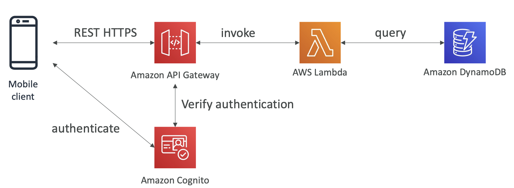
17.2. Giving Mobile Users Access to an S3 Bucket
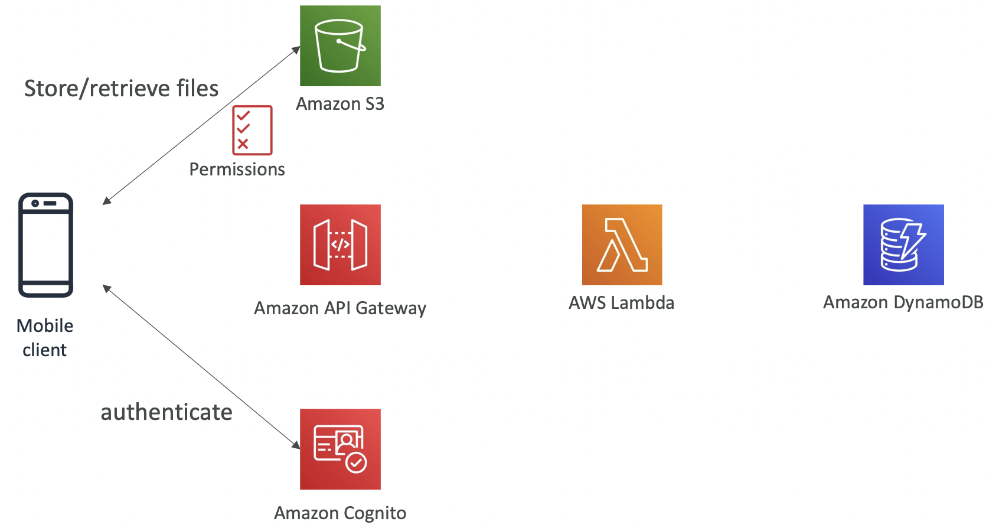
17.3. High Throughput Example
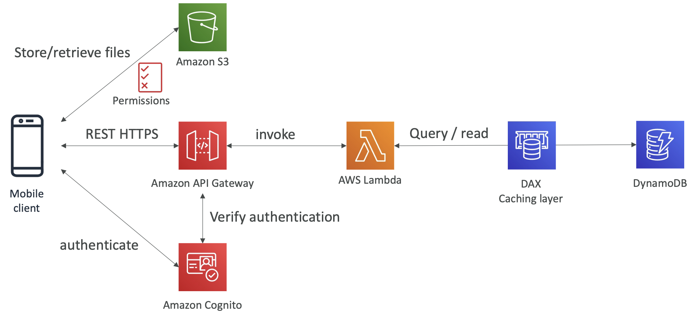
We can add a caching layer to improve read times.
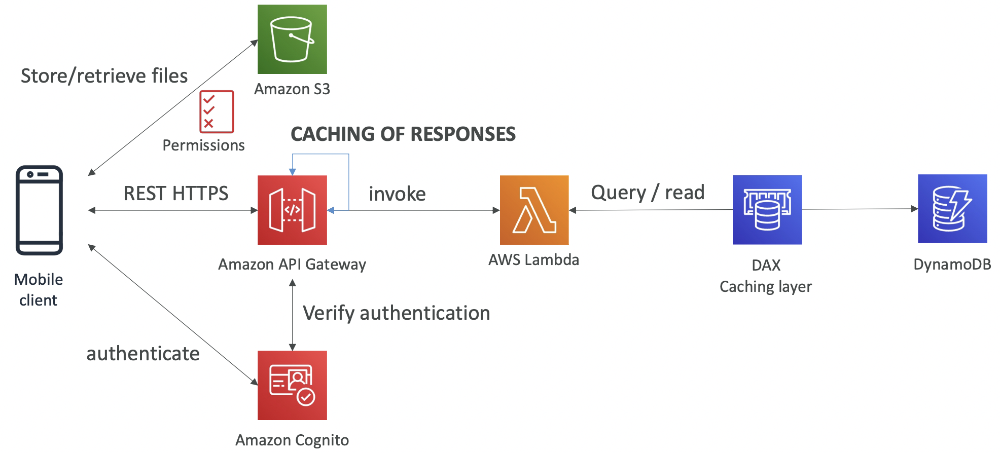
18. Databases
18.1. Database Overview
Database types:
- RDBMS (SQL OLTP)
- NoSQL
- Object store
- Data warehouse (SQL OLAP)
- Search database
- Graph database
- Ledger
- Time series
18.2. RDS
Managed RDBMS. Discussed in previous section.
18.3. Aurora
Separation of storage vs compute. Aurora has a PostgreSQL and MySQL compatible API.
Data is stored in 6 replicas across 3 AZ.
There is a serverless option.
18.4. ElastiCache
Managed Redis or Memcached cache; in-memory data store.
Requires changes to your application code to use the cache.
18.5. DynamoDB
Managed serverless NoSQL database.
There are two capacity modes: provisioned or on-demand.
You can optionally add a DAX cluster for read caching.
18.6. S3
Key/value store for objects.
Best for large objects, not many small objects. Max object size is 5 TB.
18.7. DocumentDB
DocumentDB is like a managed MongoDB (NoSQL). Analogous to how Aurora is managed SQL.
18.8. Neptune
Managed graph database.
Highly available with up to 15 read replicas across 3 AZs.
Neptune Streams is a real-time ordered sequence of every change to your graph DB. The streams data is available via a REST API.
18.9. Amazon Keyspaces
This is a managed Cassandra (NoSQL) database service.
Queries are done with Cassandra Query Language (CQL).
There are two capacity modes: on-demand and provisioned.
18.10. Amazon Timestream
Managed time series database.
Recent data is stored in memory and older data is stored in cost optimised storage.
Compatible with SQL and has additional time series analytics functions.
19. Data Analytics
19.1. Athena
19.1.1. Overview
Athena is a serverless query service to analyse data stored in S3 using SQL.
It supports CSV, JSON, ORC, Avro and Parquet file formats.
Think of it like Snowflake external tables. The data is in files in S3 but you can query it with SQL.
You need to specify an S3 bucket where query results are saved to.
19.1.2. Athena Performance Improvements
- Use columnar data. This means Athena has fewer columns to scan. Parquet and ORC are recommended. AWS Glue can be used for ETL jobs to convert files to parquet from other formats.
- Compress data. Smaller retrieval.
- Partition datasets in S3 to allow querying on virtual columns. Name the directories
column_name=value, e.g.s3://example_bucket/year=2025/month=1/date=2/data.parquet
19.1.3. Federated Query
This allows you to run SQL queries across data stored in different places - Elasticache, DynamoDB, Aurora, on-premises, etc.
It does this using Data Source Connectors that run as a Lambda function.
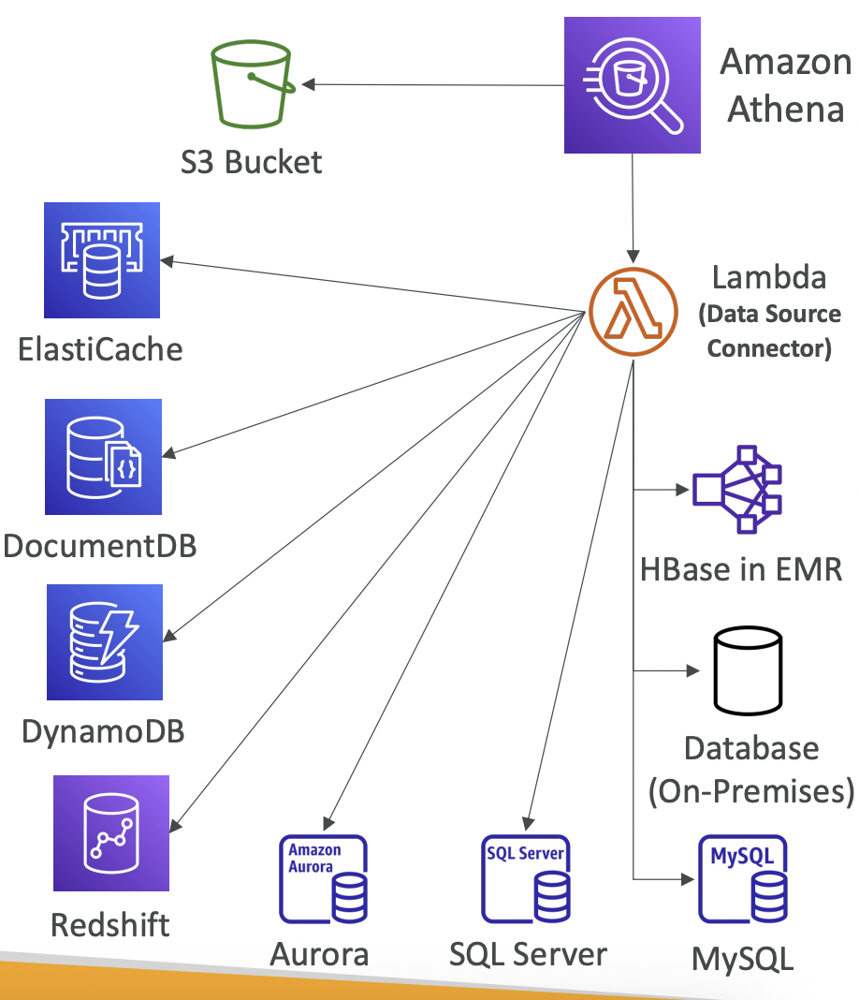
19.2. Redshift
19.2.1. Overview
Redshift is based on PostgreSQL but used for OLAP not OLTP (analytics not transactions). It uses columnar storage.
There are two modes: provisioned cluster or serverless cluster. Provisioned mode allows you to select instance types in advance and reserve instances for cost savings.
Compared to Athena, Redshift is faster to join, query, aggregate. The downside is you need a cluster whereas Athena is completely serverless.
A Redshift cluster has a leader node for query planning and results aggregation, and compute nodes which perform queries and send results to the leader node.
19.2.2. Disaster Recovery
Redshift has multi0AZ for some clusters. Otherwise snapshots are required for DR.
Snapshots are point-in-time backups stored in S3. They are incremental, so only diffs are saved. They can be automated, either every 8 hours or every 5 GB, with a set retention periods. Manual snapshots are retained indefinitely.
Snapshots can be configured to save to another region for DR.
19.2.2. Loading Data into Redshift
Large inserts are much better.
19.2.3. Redshift Spectrum
This can be used to query data into S3 without loading it, using an existing Redshift cluster that is already running.
The query is sent to Redshift referencing an S3 external table, then the leader node routes the query to compute nodes, which route to Redshift Spectrum nodes, which query S3.
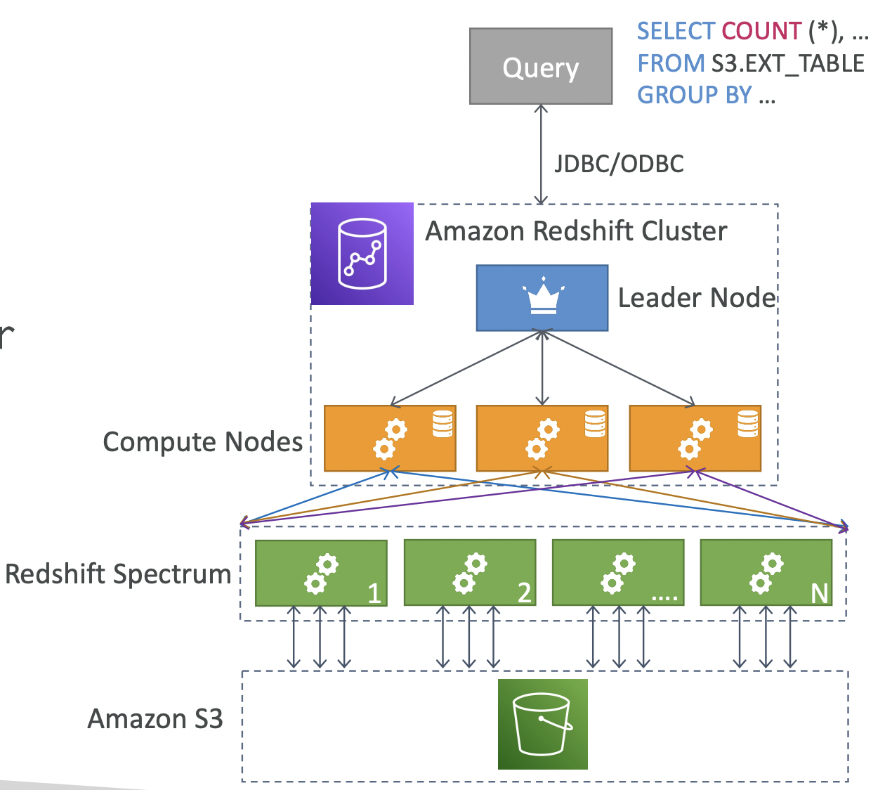
19.3. Amazon OpenSearch
OpenSearch is a successor to ElasticSearch. You can search any field, even partial matches. Contrast this to DynamoDB, where queries must be by primary key or indexes.
OpenSearch is commonly used to complement other databases; for example, DynamoDB provides the retrieval capability, then writes to OpenSearch via a Lambda function so that OpenSearch can be used for the search capability.
OpenSearch uses its own query language, but can be made compatible with SQL using a plugin.
Two modes: managed cluster or serverless cluster.
19.4. EMR
Elastic MapReduce (EMR) creates Hadoop clusters to analyse and process big data. The cluster can be made of hundreds of EC2 instances. The cluster can autoscale and use spot or ondemand instances.
EMR comes bundled with Spark, HBase, Presto, Flink, etc so requires less provisioning and configuration.
Node types:
- Master node: manage the cluster, coordinate, health checks. Long running.
- Core node: run tasks and store data. Long running.
- Task node: optional nodes that just run tasks. Typically spot instances.
Purchasing options:
- On demand
- Reserved
- Spot
Clusters can be long running or transient (temporary).
19.5. QuickSight
19.5.1. Overview
Serverless BI service to create interactive dashboards. Integrated with RDS, Aurora, Athena, Redshift, S3, etc.
QuickSight integrates with:
- Most (all?) AWS data services
- 3rd party applications like Salesforce or Jira
- Imports for files, eg xlsx, csv, json
- On-premises databases using JDBC
If data is imported into QuickSight, in-memory computation can be done using the SPICE engine.
It is possible to set up column-level security so users can only see columns that they are permissioned for.
19.5.2. Dashboard and Analysis
You define Users and Groups in QuickSight; note that these are not the same as IAM users.
A dashboard is a read-only snapshot of an analysis that can be shared and preserves the configuration (filtering, parameters, sort, etc).
Users who can see a dashboard can also access its underlying data.
19.6. AWS Glue
19.6.1. Overview
Glue is a managed ETL service (serverless).
It is commonly used to convert file formats, e.g. CSV -> Parquet.
- Glue Job Bookmarks prevent reprocessing old data.
- Glue DataBrew cleans and normalises data using prebuilt transformations
- Glue Studio is a GUI to create and manage ETL jobs in Glue.
- Glue Streaming ETL is built on Apache Spark Structured Streaming.
19.6.2. Glue Data Catalog
An AWS Glue Data Crawler crawls the different AWS data services (S3, RDS, DynamoDB, connected on-premises databases) and writes metadata to the AWS Glue Data Catalog.
Glue jobs can then use this to know what tables and schemas exist.
Athena, Redshift and EMR use this under the hood for data discovery.
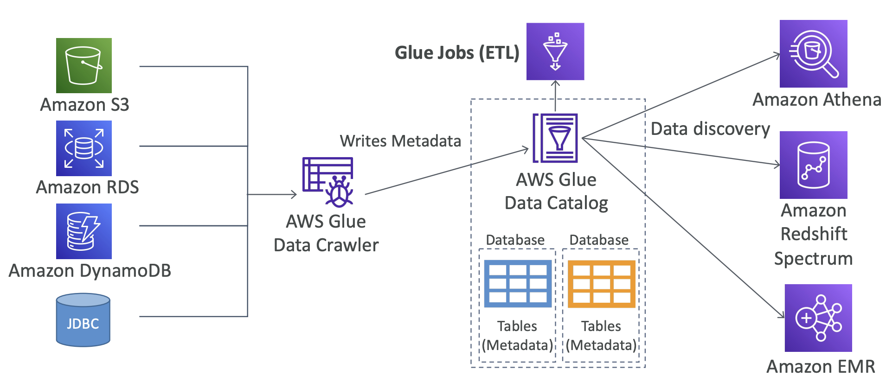
19.7. AWS Lake Formation
A data lake is a central place for data. AWS Lake Formation is a managed service to set up data lakes. It allows you to discover, clean, catalog, transform and ingest data into your data lake, providing automated tools for this. Behind the scenes, it is a layer on top of AWS Glue.
There are blueprints for S3, RDS, relational databases, NoSQL databases, etc to make set up easy.
Access control is fine-grained at both row-level and column-level. Centralised permissions is a common use case for using Lake Formation. The underlying S3, RDS, Aurora sources might all use different IAM rules and access policies, so you can define the user access in Lake Formation.
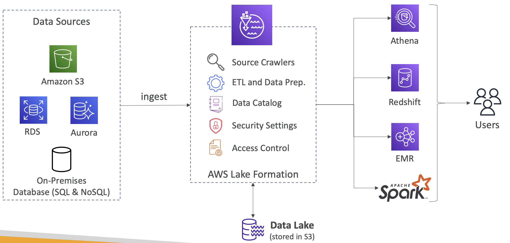
19.8. Amazon Managed Service for Apache Flink
Flink is a framework for processing data streams. AWS provides a managed service to handle provisioning and backups.
Flink can read from Kinesis Data Streams or Amazon MSK (managed Kafka). Note that Flink does not read from Amazon Data Firehose.
19.9. Amazon Managed Streaming for Apache Kafka
This is called MSK. It is a fully managed Apache Kafka service, and is an alternative to Amazon Kinesis. It is a message broker that sits between your data sources and downstream services.
It allows you to create, update and delete clusters, manage the Kafka broker nodes and zookeeper nodes, deploy in multi-AZ setup, automatic recovery and persist data to EBS volumes.
There is a serverless option to autoscale.
Example of how Kafka works: 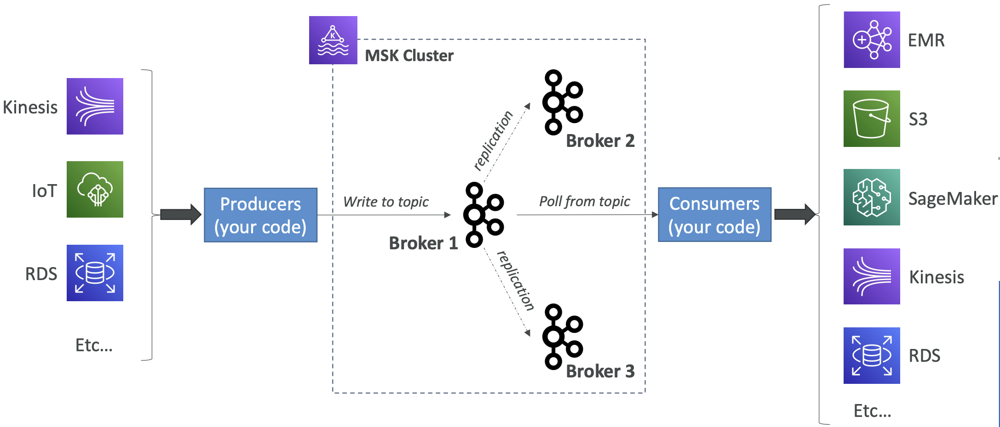
Difference between Kinesis Data Streams and Amazon MSK:
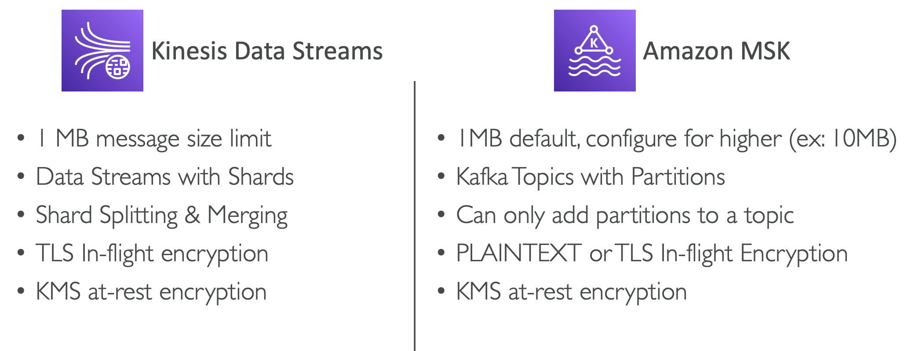
19.10. Big Data Ingestion Pipeline
Example of a big data ingestion pipelines
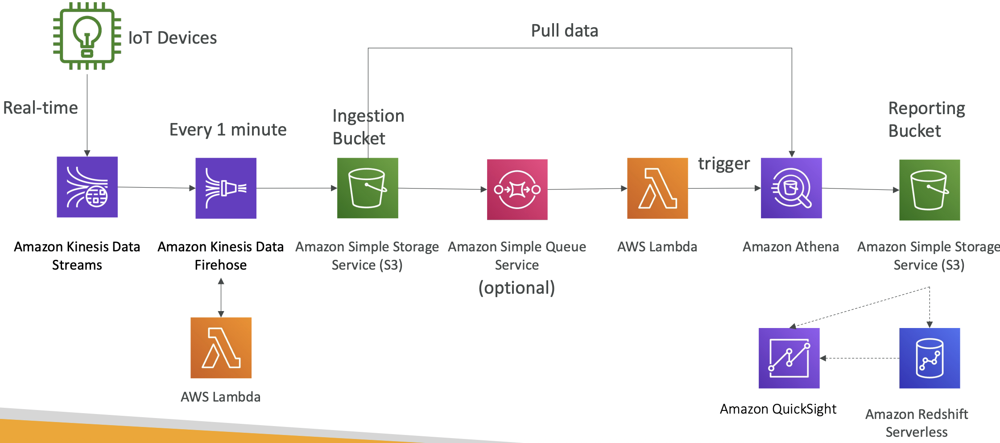
20. Machine Learning
20.1. Amazon Rekognition
Computer vision. Find objects, people, text, scenes in images and videos.
You can create a database of familiar faces or compare against celebrities.
One use case is content moderation, to detect inappropriate or offensive content. You can set a minimum confidence threshold for flagging content. Flagged content can be manually reviewed in Amazon Augmented AI (A2I).
20.2. Amazon Transcribe
Convert speech to text using automatic speech recognition.
You can automatically remove Personally Identifiable Information (PII) using Redaction, and automatically detect languages for multi-lingual audio.
20.3. Polly
Text to speech.
Lexicon can be used to customise the pronunciation of words, or expand acronyms to the full name.
Speech Synthesis Markup Language allows more precise customisation, such as emphasis, breathing sounds, whispering.
20.4. Translate
Language translation. It can be used to localise content.
20.5. Lex and Connect
Amazon Lex is the technology that powers Alexa. Automatic Speech Recognition and natural language understanding. It can be used to build chatbots.
Amazon Connect allows you to receive calls and create contact flows like a virtual call centre. It can integrate with CRM or AWS services.
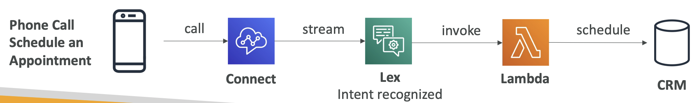
20.6. Amazon Comprehend
Fully managed NLP service. Use cases include: detecting language, sentiment analysis, extract entities, organise text files by topic.
Comprehend Medical is specifically for a clinical setting. It automatically detects Protected Health Information (PHI).
20.7. SageMaker AI
Fully managed service for data scientists to build ML models.
20.8. Amazon Kendra
Fully managed document search service. Extract answers from within a document. Natural language search capability. Incremental learning from user interactions to promote preferred results.
20.9. Amazon Personalize
Fully managed ML service to build apps with real-time personalised recommendations. Same tech used for the Amazon website.
20.10 Amazon Textract
Automatically extract text, handwriting and data from scanned documents.
21. Monitoring
21.1. CloudWatch
21.1.1. CloudWatch Metrics
CloudWatch provides metrics for AWS services. A metric is a variable to monitor like CPU utilisation, network in throughput, etc. Metrics belong to a namespace. Metrics have timestamps. You can create CloudWatch Custom Metrics.
A dimension is an attribute of a metric (instance ID, environment, etc). You can have 30 dimensions per metric.
You can create dashboards of metrics in CloudWatch.
CloudWatch Metric Streams are a near realtime delivery of CloudWatch metrics into another service, eg Kinesis Data Firehose or a 3rd party service like Datadog. You can filter metrics to see just a subset.
21.1.3. CloudWatch Logs
You can create named log groups, which usually represent an application. Within the log groups, you have log stream which are individual log files.
You can define a log expiration policy between 1 day and 10 years, or retain indefinitely.
Logs are encrypted by default and you can customise this with KMS.
CloudWatch Logs can send logs to:
- S3 - batch export with
CreateExportTaskAPI call, can take up to 12 hours - Kinesis Data Stream
- Kinesis Data Firehose
- AWS Lambda
- OpenSearch
CloudWatch Logs Subscriptions can be used to get real-time log events (all services above except S3). A subscription filter can filter on relevant data. You can use these to aggregate logs across regions and accounts. A cross-account subscription is required from multi-account aggregation; the sender account must have cross-account write access in the IAM role and the recipient account must have an access policy to allow the subscription from the sender account.
Sources of logs can be:
- SDK
- Elastic beanstalk - from application
- ECS - from container
- Lambda - from function
- VPC Flow Logs
- API Gateway
- CloudTrail
- Route53 - log DNS queries
CloudWatch Logs Insights can be used to search and analyse data stored in CloudWatch Logs. It can query across different AWS accounts.
21.1.4. CloudWatch Agent
By default, logs from EC2 do not go to CloudWatch. You need to run a CloudWatch Agent on EC2 to push the log files, and the EC2 instance must have the corresponding IAM permissions. A CloudWatch log agent can be set up on-premises too.
CloudWatch Unified Agent can collect both system-level metrics (RAM, CPU usage etc) and logs. You can configure it with SSM Parameter Store. The older CloudWatch Logs Agent only does logs.
21.1.5. CloudWatch Alarms
Alarms are used to trigger notifications for any metric. They can be based on different aggregations, e.g. min, max, % threshold, sampling. The period is the time window (seconds) to evaluate the metric.
Alarm states: OK, INSUFFICIENT_DATA, ALARM
Alarms have three main targets:
- EC2 instance - stop, terminate, reboot or recover and instance
- Trigger EC2 autoscaling
- Send a notification to SNS
Composite alarms monitor the state of multiple alarms, so you can combine metrics with AND or OR conditions. Composite alarms can be useful to reduce alarm noise.
Alarms can be created based on CloudWatch Logs Metrics Filters. To test alarms, there is a set-alarm-state command in the CLI.
EC2 Instance Recovery
We can perform status checks on:
- Instance status - check the EC2 VM
- System status - check the underlying hardware
- Attached EBS status - check attached EBS volumes
If one or more fail, we can recover by creating a new EC2 instance with the same IP (public, private or elastic), metadata, placement group, etc.
21.1.6. Amazon EventBridge
EventBridge was formerly called CloudWatch Events. It can be used to schedule cron jobs, react to events, or trigger lambdas.
Different sources can send events to EventBridge, which then sends a JSON to a target destination.
EventBridge is the default event bus in AWS. Partner event bus means third-parties like Datadog can write to EventBridge. You can also create a Custom Event Bus for your own applications.
You can archive events sent to an event bus. Archived events can be replayed for debugging and testing.
EventBridge can analyse events in your bus and infer the schema. A schema registry allows you to specify a known schema in advance. Schemas can be versioned.
We can manage permissions for a specific event bus using a resource-based policy.
21.1.7. CloudWatch Insights
CloudWatch Container Insights. This collects, aggregates and summarises metrics and logs from containers on ECS, EKS and Fargate.
CloudWatch Lambda Insights. Monitoring and troubleshooting for serverless applications running on Lambda. Collects, aggregates and summarises system-level metrics like CPU, memory, network. Also diagnostic info like number of cold starts, Lambda worker shutdowns.
CloudWatch Contributor Insights. Analyse log data and create time series of contributor data, e.g. heaviest network users, URLs that generate the most errors.
CloudWatch Application Insights. Automated dashboards showing issues with monitored applications. Uses SageMaker under the hood.
21.2. CloudTrail
Provides governance, compliance and audit for your AWS account. It is enabled by default. It can be applied to all regions (by default) or a single region.
CloudTrail logs can be written to CloudWatch Logs or S3. This can be used to retain logs beyond the 90 day retention period of CloudTrail.
Actions from SDK, CLI, console, IAM users and roles are written to CloudTrail.
There are three types of CloudTrail Events:
- Management Events. Operations performed on resources in your AWS account. You can separate read events and write events. Management events are logged by default.
- Data events. Read and write operations on data, e.g. S3 object-level activity. These are not logged by default as these are high volume.
- CloudTrail Insights Events. Analyses your events and tries to detect unusual activity. This needs to be enabled and costs extra. Anomalies appear in the CloudTrail console, and event is sent to S3 and and EventBridge event is generated.
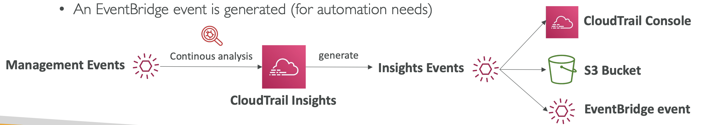
CloudTrail events are retained for 90 days. To persist events longer than this, log them to S3 and use Athena. 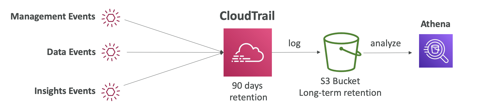
EventBridge Integration
We get a CloudTrail log for any API call. If we wanted to notify on certain events, like a table being deleted, we send the event to EventBridge and then trigger an alert in SNS.
21.3. AWS Config
Records configurations and changes over time. This helps with auditing and recording compliance of your AWS resources. Config rules alert when certain actions happen but they do not deny them.
AWS Config is a per-region service, and data can be aggregated across regions and accounts.
You can configure SNS alerts for changes to config and store config data in S3 for analysis with Athena.
21.3.1. Config Rules
Can use one of 75 AWS-managed config rules or create custom rules.
Rules can be evaluated for each config change or at regular time intervals.
You pay per config item per region and per config rule per region.
You can view the compliance of a resource over time and link it to CloudTrail API calls for that resource.
21.3.2. Remediations
You cannot prevent non-compliant resources but you can use SSM Automation Documents to trigger actions to remediate any compliance issues. You can create custom automation documents that trigger lambda functions.
You can set retries if the remediation is not successful the first time.
A common pattern is to use EventBridge to trigger notifications on non-compliance and set up an SNS alert to an email address or Slack channel.
21.4. CloudWatch vs CloudTrail vs Config
Compare and contrast.
- CloudWatch is for performance monitoring and dashboards, alerts, and log aggregation/analysis.
- CloudTrail records API calls made within your account for audit.
- AWS Config records configuration changes and evaluates compliance of resources.
22. Advanced IAM
22.1. AWS Organisations
AWS Organisations allow you to manage multiple AWS accounts. The main account is the management account and others are member accounts. Member accounts can only belong to one organisation.
Billings are consolidated across all accounts, so the management account only needs to pay a single bill. This gives pricing benefits due to volume discounts on aggregated usage. You can share reserved instances and savings plans across member account.
The accounts are organised as Organizational Units (OU). An example of this below:

As well as the convenience of managing a single management account and the cost savings, another benefit of AWS Organisations is increased security. Service Control Policies (SCP) can be applied to any and all member accounts.
22.1.1. Tag Policies
Tag policies standardise tags across all resources in an AWS Organisation. You can define tag keys and their allowed values.
You can generate a report to list all tagged and non-compliant resources.
22.1.2. IAM Conditions
You can specify conditional statements in the IAM policy to only apply that rule in certain cases, e.g. deny certain IP addresses or allow certain regions.
22.1.3. IAM roles vs Resource-Based Policies
If we want to allow cross-account access to a resource, say an S3 bucket, we can either:
- Attach a resource-based policy to the S3 bucket
- Use an IAM role as a proxy
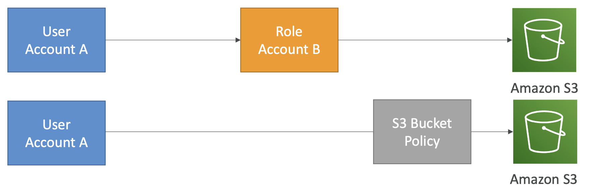
When you assume a role you give up all other permissions, you only have access to the resources permissioned by that role.
There are cases where we may need to read from an S3 bucket in another account and write it to a bucket in our own account. This would require a resource-based policy, since the task needs both read and write permissions. The IAM approach would give up one or the other.
Amazon EventBridge uses resource-based permissions or IAM roles depending on the target resource. You need to look at the EventBridge policy to determine which it will use. Eg S3 uses resource based, ECS take use IAM.
22.1.4. IAM Permission Boundaries
Permission boundaries are supported for both users and roles, but not for groups. They act as a guardrail to limit the maximum permissions a user or role can have, regardless of the permissions granted by their IAM policies.
A permission boundary is an additional IAM policy definition that specifies the maximum permissions the role could be granted. The user/role still needs to have an IAM policy which defines the permissions it is actually granted.
If a permission is set in the IAM policy but this is outside the permission boundary, then this will NOT be granted.
The actual permissions a user has is the intersection of Organisations SCP, permissions boundary and IAM policy. See here. 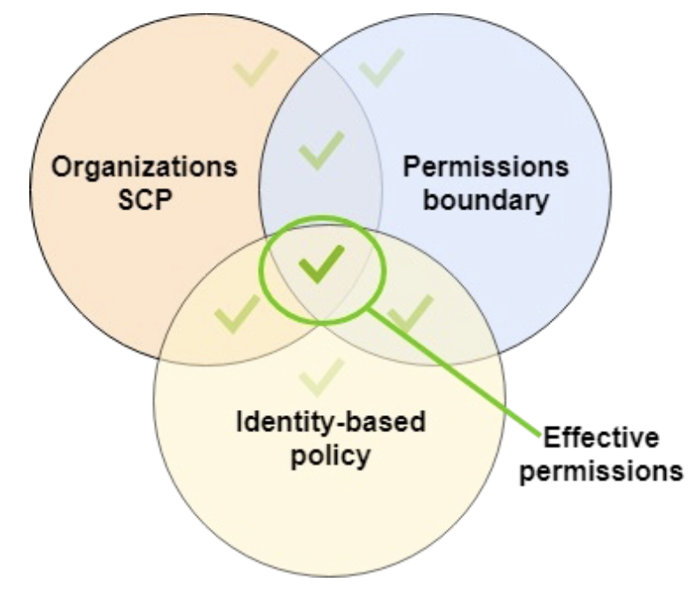
A use case of permission boundaries is to let users self-assign their policies without escalating their privileges to admin level.
Another use case is to restrict one specific user (e.g. an intern or a loose cannon) rather than applying and organisation-level SCP.
Explicit deny rules overall any allow rules.
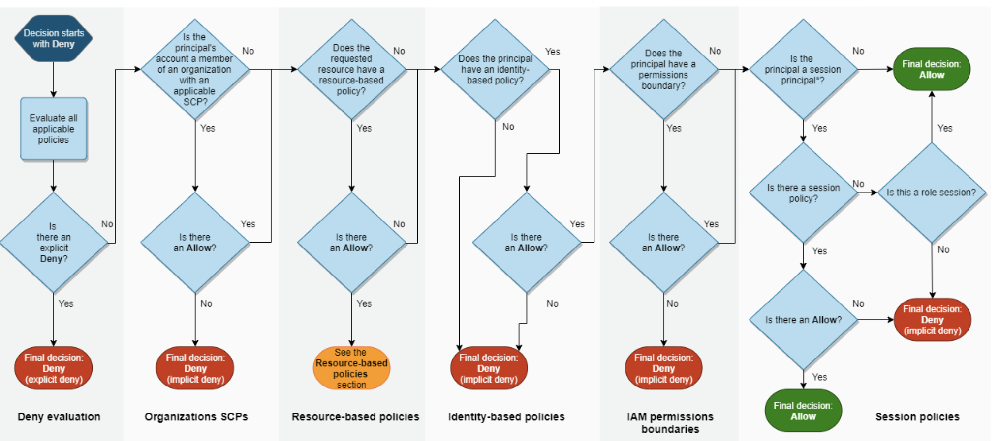
22.2. AWS IAM Identity Centre
This used to be called “AWS Single Sign On”.
This allows you to have one login for: AWS accounts in AWS Organisations, business cloud applications (e.g. Microsoft 365), EC2 Windows Instances.
You define permission sets in the identity centre to determine who has access to what.
Identity providers can be the built-in identity store in IAM Identity Centre or a 3rd-party provider like Active Directory.
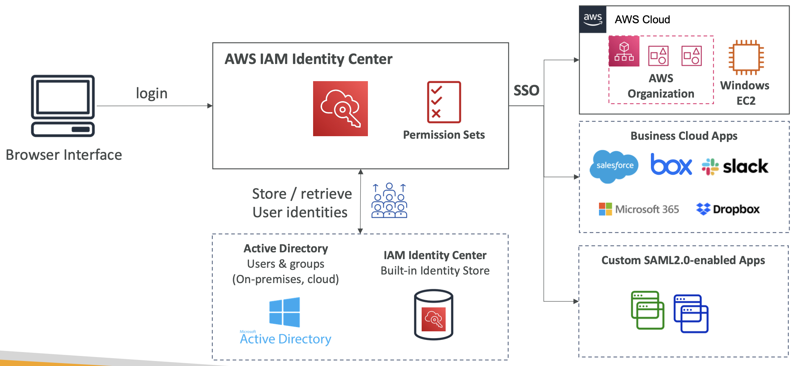
22.3. AWS Directory Services
22.3.1. Active Directory
Active Directory is a database of objects - user accounts, computers, printers, file shares, security groups - found on a Windows server. Objects are grouped into trees, trees are grouped into forests.
AD allows centralised security management to create account and assign permissions.
22.3.2. AWS Directory Services
There are three flavours of Active Directory on AWS:
- AWS-Managed Microsoft AD. Create your own AD in AWS and establish “trust” connections with your on-premise AD
- AD Connector. This is a Directory Gateway, i.e. proxy, to redirect to your on premise AD. Users are managed on the on-premise AD.
- Simple AD. An AD-compatible managed directory solely on AWS. It cannot be joined with an on-premises AD. This could be useful if running EC2 instances which run Windows.
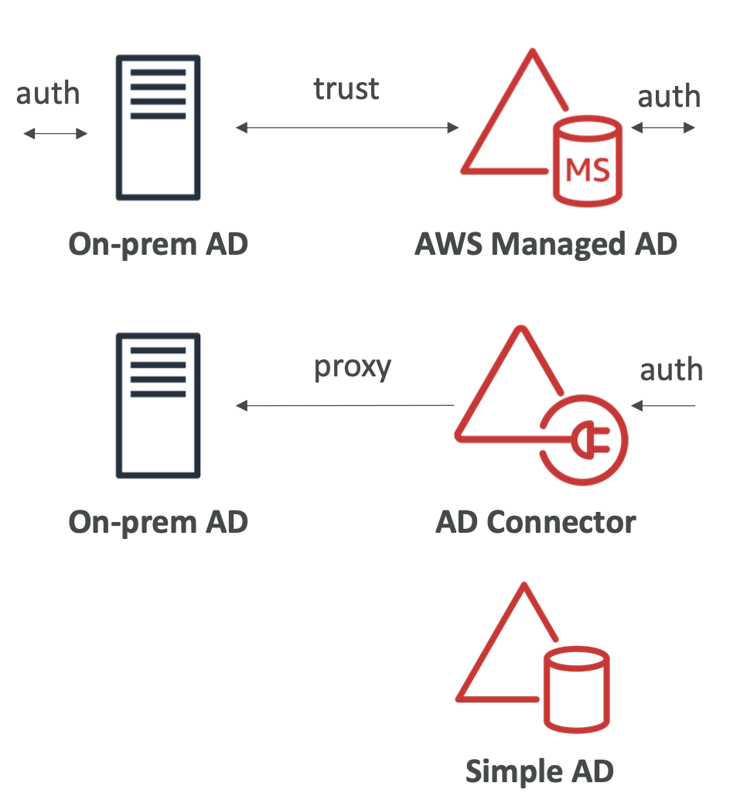
22.3.3. Integrating AD with IAM Identity Centre
If using AWS-Managed Microsoft AD, the integration is out of the box.
If connecting to a self-managed directory, you either need to create a two-way trust relationship using AWS Managed Microsoft AD or use AD Connector.
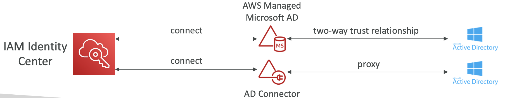
22.4. AWS Control Tower
Control Tower provides an easy way to set up and govern a multi-account AWS environment. It used AWS Organisations to create organisations.
The benefits of Control Tower are automated environment set up, automated ongoing policy management using guardrails, detect and remediate policy violations, dashboards to monitor compliance.
Guardrails provide ongoing governance for your control tower environment. There are two types of guardrail:
- Preventive guardrail. Using SCPs to prevent non-compliant resources.
- Detective guardrail. Using AWS Config to detect non-compliant resources.
23. Security and Encryption
These topics have been covered alongside other topics so much of it is a refresher and filling in any gaps.
23.1. Encryption
23.1.1 Encryption 101
There are three encryption mechanisms to know about.
In-flight Encryption
Data is encrypted before sending and decrypted after receiving. TLS certificates (and SSL which is the more modern version) help with encryption.
In-flight encryption protects against Man in the Middle (MITM) attacks.
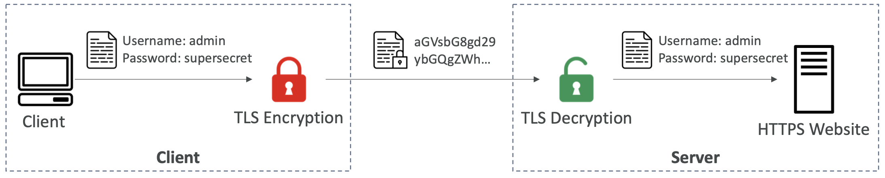
Server-side Encryption at Rest
Data is encrypted after being received. The server must have access to a key to encrypt/decrypt the data.
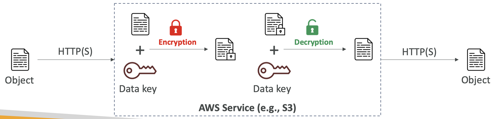
Client-side Encryption
Data is encrypted by the client only, never decrypted by the server. This is useful in cases where we don’t trust the server.
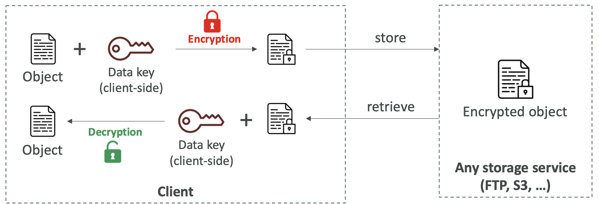
23.2. KMS
23.2.1. KMS Overview
Key Management Service. This handles pretty much all of the encryption in AWS and is fully integrated with IAM and other services. KMS key usage can be audited through CloudTrail.
There are two types of KMS Key:
- Symmetric. A single key is used to both encrypt and decrypt. You never get access to the KMS Key directly, you call the KMS API to use it.
- Asymmetric. Public key to encrypt and private key to decrypt. RSA or ECC key pairs. You can download the public key from KMS but not the private key.
Keys can be:
- AWS-owned keys
- AWS-managed keys
- Customer-managed keys created in KMS
- Customer-managed keys imported into KMS
Customer-managed keys cost $1/month. Imported keys are also charged per API call. Keys are automatically rotated.
KMS keys are per region and cannot be copied across regions. If copying an encrypted EBS volume to another region, you re-encrypt it with a key from the destination region.
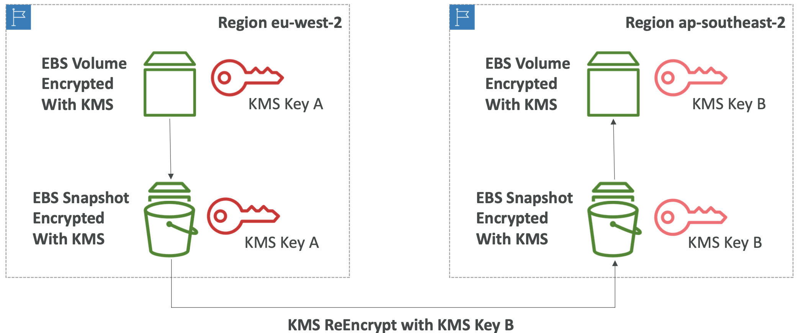
23.2.2. KMS Key Policies
You can control access to your KMS keys. This is similar to S3 bucket policies.
The default KMS key policy gives all users access to the default KMS key. You can create a custom KMS key policy to define the roles and users who can use and administer keys.
23.2.3. Multi-region Keys
You can replicate a primary key across regions, creating a replica key with the same key ID in the target region. They are synced so when the primary is rotated the replicas are updated too.
This allows you to use keys interchangeably across regions. You can encrypt in one region and decrypt in other regions. This avoids the need to re-encrypt when moving data across regions, or making cross-region KMS calls.
KMS multi-region keys are NOT global. Each key is managed independently with its own key policy.
Use cases are when you want global client-side encryption, or if you are using encryption on a global database service like DynamoDB or Aurora.
23.3.4. S3 Replication Encryption Considerations
Unencrypted objects and SSE-S3 encrypted objects are replicated by default. Objects encrypted with SSE-C (customer-provided key) can be replicated.
Objects encrypted with SSE-KMS need to have replication enabled in the options. They are not replicated by default.
- Specify the KMS Key to encrypt objects in the target bucket
- Update the KMS Key Policy for the target key
- Appropriate IAM roles with
kms:Decryptpermissions for the source key andkms:Encryptfor the target key
You may get KMS throttling errors as there are more API calls involved. You can increase your service quota.
You can use multi-region KMS Keys for S3 replication but they are treated as independent keys by S3, so it will still re-encrypt your data with the (replicated) target key.
23.3. SSM Parameter Store
23.3.1. Overview
Secure storage for configuration and secrets. You can optionally encrypt these using KMS.
It allows version tracking of these. Security is through IAM and notifications are through Amazon EventBridge.
You can store parameters in a hierarchy, e.g. my-department/app-name-1/prod/db-url
You can reference secrets stored in Secrets Manager through a specific path in Parameter Store: /aws/reference/secretsmanager/<secret-ID-in-Secrets-Manager>
There are public parameters issued by AWS that you can access through /aws/service for example the latest Amazon Linux AMI version available in a region.
There are standard and advanced parameter tiers. The differences are in the number and size of parameters you can store, and advance allows parameter policies.
23.3.2. Parameter Policies
You can assign a TTL to a parameter to force updates/deletes for sensitive data after an expiry date.
23.4. AWS Secrets Manager
23.4.1. Overview
A newer AWS service meant specifically for storing secrets. You can force rotation of secrets every X days, and automate the generation of new secrets using a Lambda. Secrets are encrypted using KMS.
It integrates nicely with Amazon RDS and other services.
24.4.2. Multi-region Secrets
You can replicate secrets across regions. Secrets Manager will keep these in sync.
This is helpful for disaster recovery; if the region of the primary secret becomes unavailable you can promote a replica secret in its place.
23.5. AWS Certificate Manager (ACM)
23.5.1. Overview
ACM allows you to provision and manage TLS certificates, which provide in-flight encryption for websites (HTTPS).
You can automatically renew certificates through TLS. There is integration with services like elastic load balancers, CloudFront Distributions, API Gateway. You cannot use ACM with EC2; the certificates can’t be extracted.
Free for public TLS certificates.
23.5.2. Requesting Public Certificates
- List domain names to be included in certificate. This can be the fully qualified domain name or wildcard domains
*.example.com - Select validation method - DNS validation or email validation
- It takes a few hours to get verified
Once you have a certificate, it is enrolled for automatic renewal. ACM automatically renews any certificates it generates 60 days before expiry.
Certificates which are imported into ACM need to be renewed manually. EventBridge or AWS Config can be used to trigger alerts when a certificate is near expiry.
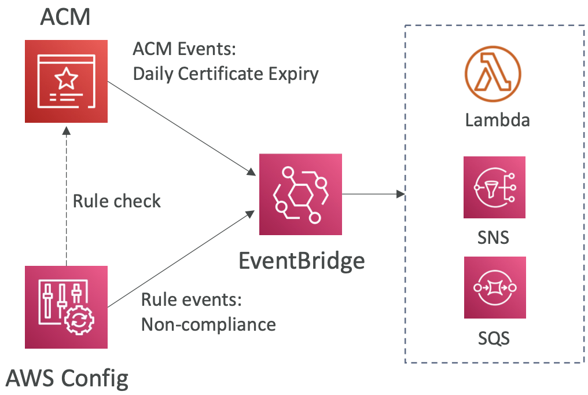
23.6. Web Application Firewall (WAF)
23.6.1. Overview
Protects your web applications common web exploits on layer 7 (HTTP).
WAF can be deployed on: ALB, API Gateway, CloudFront, Cognito User Pool.
23.6.2. Web ACL
Once WAF is deployed to an application, you can set up a Web ACL (access control list) to enforce rules based on:
- IP address
- HTTP headers or body - protect against SQL injection
- Geo-match - block certain countries
- Rate-based rules - protect against DDoS
Web ACL is regional except for CloudFront. A rule group is a reusable set of rules that you can add to a web ACL.
A common use case is to get a fixed IP while using WAF with a load balancer. A network load balancer has a fixed IP but operates at level 4 so we can’t use a WAF with it. We can use an application load balancer with Global Accelerator to get a fixed IP, then use a WAF with the ALB.
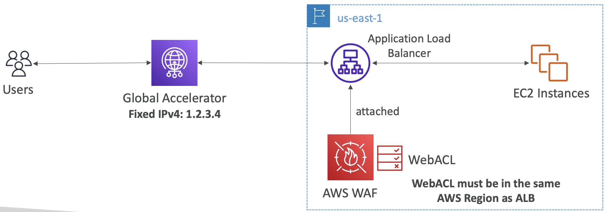
23.7. AWS Shield
Protects against DDoS attacks.
AWS Shield Standard is free and protects against SYN/UDP Floods, Reflection attacks and other layer 3/4 attacks.
AWS Shield Advanced provides optional protection against more sophisticated attacks and includes 24/7 support. It costs $3000 per month per organisation.
23.8. AWS Firewall Manager
Manage rules in all accounts of an AWS Organisation. Rules are applied to new resources as they are created to ensure compliance.
Security policy is a common set of security rules. Policies are created at the region level.
WAF, Shield and Firewall Manager work together: define Web ACL rules in WAF, apply them across accounts with Firewall Manager, and get additional protections through Shield.
23.9. Best Practices for DDoS Resiliency
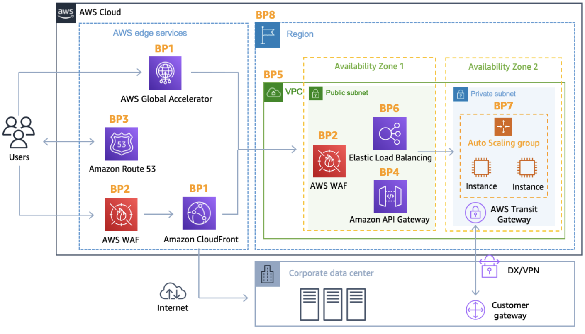
Best practices:
- BP1: CloudFront protects against common attacks. An alternative is Global Accelerator with AWS Shield.
- BP2: Detect and filter malicious requests with WAF. AWS Shield Advanced will automatically create rules for WAF.
- BP3: Route 53 has DDoS protection mechanisms.
- BP4: Obfuscate AWS resources. CloudFront, API Gateway, ELB means the attacker never knows whether you’re using EC2, Fargate, Lambda behind the scenes.
- BP5: Security groups and network ACLs filter traffic from specific IPs.
- BP6: infrastructure layer defence protects EC2 instances against high traffic. ELB spreads traffic across instances.
- BP7: EC2 with auto-scaling
23.10. Amazon GuardDuty
Intelligent threat discovery and anomaly detection using ML.
Input data includes: CloudTrail Events logs, VPC Flow, DNS logs, other optional logs (EKS, EBS, RDS, S3 Data Events).
You can create EventBridge tiles to be notified of any findings, and those rules can create Lambdas or trigger SNS notifications.
GuardDuty has a specific “finding” to protect against Cryptocurrency attacks.
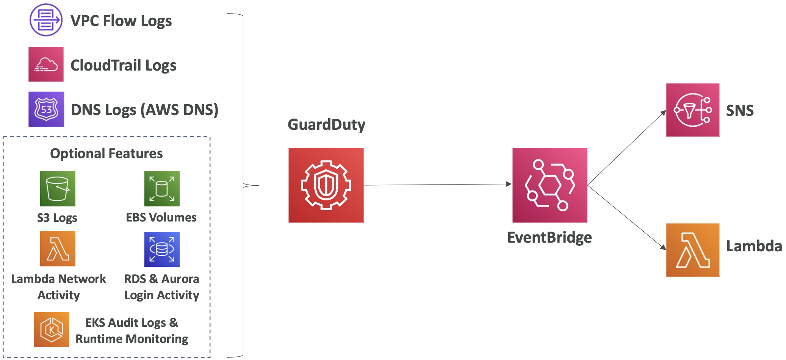
23.11. Amazon Inspector
Service that allows for automated security assessments.
- Assess EC2 instances for unintended network access, OS vulnerabilities
- Assess container images as they are pushed
- Assess Lambda functions for vulnerabilities in code and package dependencies
Amazon Inspector reports findings to AWS Security and can optionally trigger EventBridge events. It assigns a risk score to each vulnerability found.
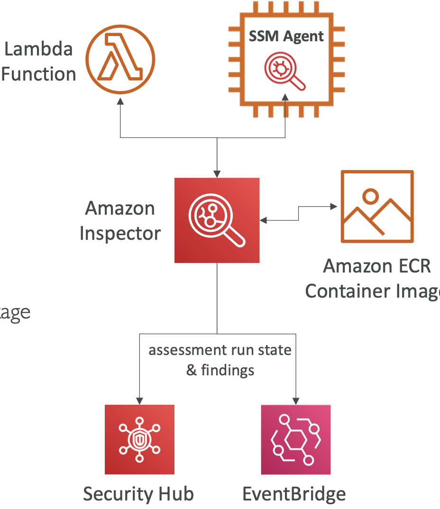
23.12. Amazon Macie
Macie is a managed data security and data privacy service that uses ML to scan for Personally Identifiable Information (PII) and other sensitive data.
It scans S3 buckets once enabled and will notify via EventBridge.
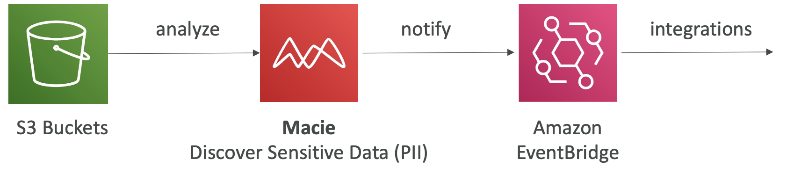
24. VPC
24.1. CIDR, Private IP, Public IP
24.1.1. CIDR
Classless Inter-Domain Routing (CIDR) is a method for allocating IP addresses. They allow us to define an IP address range.
A CIDR consists of two components:
- Base IP. Represents an IP address contained in the range. Eg 192.168.0.0
- Subnet mask. Defines how many bits can change in the IP address. Eg /8 corresponds to 255.0.0.0, /32 corresponds to 255.255.255.255
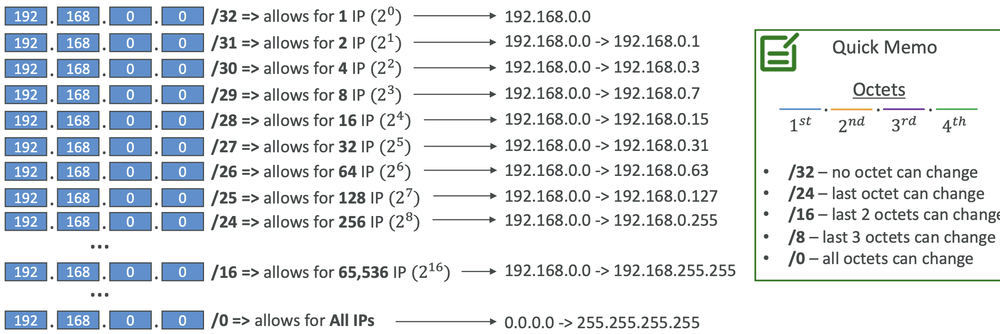
See this website for a guide on IP address ranges.
24.1.2. Public vs Private IPv4
The Internet Assigned Numbers Authority (IANA) established blocks for IPv4 addresses for use by private (LAN) and public (internet) addresses.
Private IP can only allow certain values.
This is where CIDR becomes relevant.
24.2. Default VPC
24.2.1. Overview
All new AWS accounts have a default VPC.
New EC2 instances are launched into the default VPC if no subnet is specified. The default VPC has internet connectivity and all EC2 instances within it have public IPv4 addresses. We also get public and private IPv4 DNS names.
It is best practice to create your own VPC for production processes rather than relying on the default VPC.
24.2.2. Creating Our Own VPC
VPC is a Virtual Private Cloud. We can have multiple VPCs in a region. The max is 5 per region but this is a soft limit that can be increased.
The max CIDR per VPC is 5. For each CIDR, min size is /28 and max size is /16.
Because VPCs are private, only IP addresses in the Private IPv4 ranges are allowed.
Your VPC CIDR should NOT overlap with your other networks, e.g. your corporate network. If we want to connect them together, we need to make sure the IP addresses do not overlap.
In the AWS console:
VPC -> Create VPC -> define CIDR block and other details24.2.3. Adding Subnets
A subnet is a sub-range of IP addresses. Subnets can be public or private.
AWS reserves 5 IP addresses in each subnet, the first 4 and last 1:
- 0 - network address
- 1 - reserved for VPC router
- 2 - reserved for mapping to Amazon-provided DNS
- 3 - reserved for future use
- 255 - Network Broadcast Address. AWS doesn’t support broadcast in a VPC, so this is reserved
To create a subnet in AWS console:
VPC -> Subnets -> specify name, region, CIDR block24.2.4. Internet Gateway (IGW)
IGW allows resources in a VPC to connect to the internet, e.g. EC2 instances. It is created separately of a subnet. One VPC can only be attached to one IGW and vice versa.
It scales horizontally and is highly available and redundant.
IGW on its own does not allow internet access, we also need to edit the route tables.
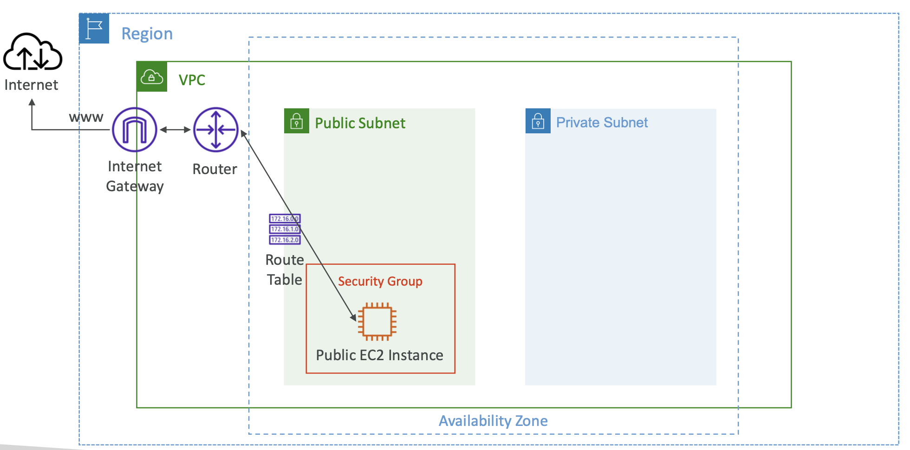
There is a default route table that is associated with subnets which don’t explicitly specify a route table.
To create our own route table in the AWS console:
VPC -> Route tables -> Create route table -> specify a name and associated VPCThen we can click on that route table and assign subnets to it. We can edit the routes on a route table and specify destination IP address and target resources that each route applies to.
24.2.3. Bastion Hosts
Sometimes we may want to allow users outside of our VPC to access a resource inside a private subnet.
A bastion host is an EC2 instance inside a public subnet of our VPC that can ssh into an EC2 instance inside the private subnet.
Then a user can ssh into the public subnet EC2 instance, and from there ssh into the private subnet EC2 instance.
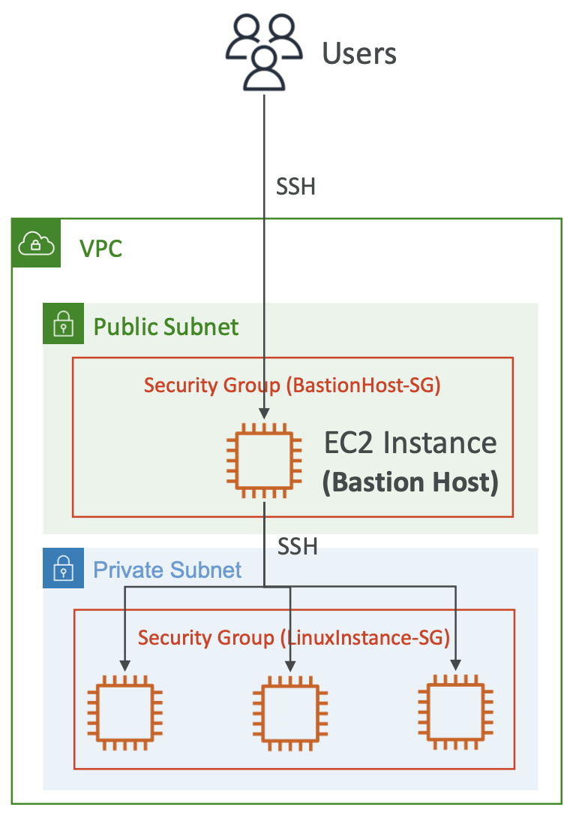
The bastion host security group must allow access from the internet on port 22. We can restrict this with a CIDR, e.g. the public CIDR of your corporate network, to only allow restricted access.
The private subnet EC2 instance security group must allow access from the private IP address (or security group) of the public EC2 instance.
24.3. NAT
NAT = Network Address Translation
24.3.1. NAT Instances
(NAT Instances are outdated and NAT Gateway is the preferred solution now.)
NAT instances allow EC2 instances in private subnets to connect to the internet. The NAT instance must be launched in a public subnet and have a fixed elastic IP attached. We also need to disable the “Source destination check” setting on the EC2 instance instance. Route tables must be configured to route traffic from private subnets to the NAT instance.
A pre-configured Amazon Linux AMI is available for NAT instances, although it has reached end of life. NAT instances are not highly available or resilient out of the box, you need to create an ASG.
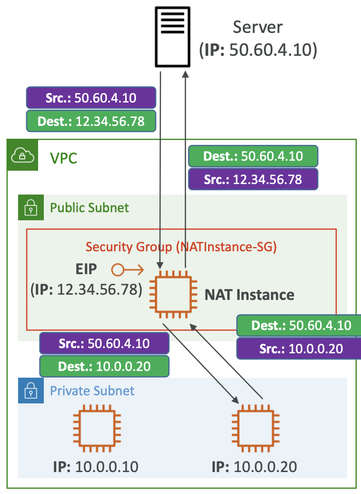
24.3.2. NAT Gateway
NAT Gateway is an AWS-managed NAT instance with higher bandwidth, availability and no admin required. You pay per hour and per bandwidth.
NAT Gateway is created in a specific AZ and uses an Elastic IP. It can’t be used by EC2 instances in the same subnet, only from other subnets.
We need multiple NATs in each AZ for fault tolerance.
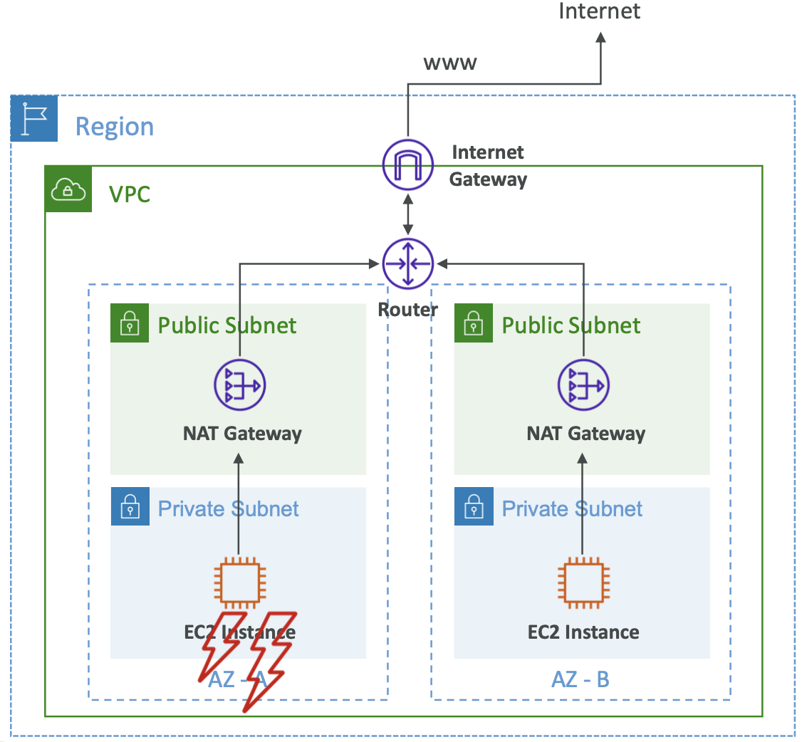
24.4. Security Groups and Network ACL
24.4.1. Overview
A Network ACL sits before the subnet to handle incoming requests according to inbound rules. It is like a firewall which controls traffic to and from subnets.
You can have one NACL per subnet, and new subnets are assigned the default NACL.
NACL rules have a number, and the first rule match (i.e. lowest rule number) takes precedent and drives the decision. The last rule is * which denies any unmatched requests. AWS recommended best practice is to increment rule numbers by 100 so that you can later add rules in between.
The distinction between security groups and NACLs is subtle but important
Security Groups are stateful. If an incoming request is allowed in, the corresponding response will always be allowed out; the security group’s outbound rules are ignored.
NACL is stateless. A request may be allowed in according to the inbound rules, but the response could still be blocked by the NACL’s outbound rules.
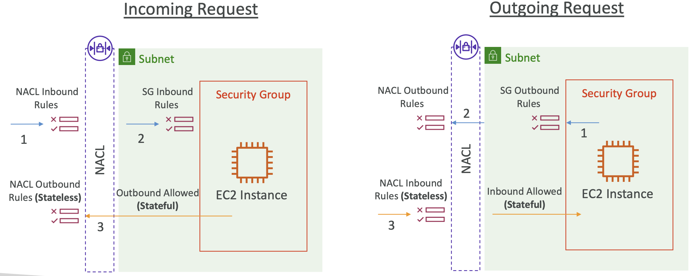
If you have multiple subnets, you need to make sure every combination of inbound and outbound rules are allowed.
Comparison table:
24.4.2. Default NACL
The default allows everything inbound and outbound for its associated subnets.
It is best practice to not modify the default NACL and instead create a custom NACL.
24.4.3. Ephemeral Ports
For any two endpoints to establish a connection, they must use ports. Clients connect to the server using a fixed port, and expect a response on an ephemeral port. This is a temporary port that is open just for this connection.
Ephemeral ports are important to consider when dealing with NACLs because we need to configure the rules to allow inbound/outbound requests on the appropriate port range.
24.5. VPC Peering
VPC peering is for when we want to privately connect two VPCs using AWS’s private network, to make them behave as if they were one network.
You still need to update route tables in each VPC’s subnets to ensure EC2 instances can communicate with each other.
They cannot have overlapping CIDRs.
VPC peering is NOT transitive. If we peer from A to B, and B to C, then A will NOT be connected to C unless we also explicitly peer from A to C.
VPC peering can be set up across different AWS accounts and regions. When peering across accounts in the same region, you can reference a security group which is convenient as you do not have to reference the CIDR.
24.6. VPC Endpoints
When you want to expose AWS resources that are within your VPC to the public internet.
Every AWS resource has a public IP. A VPC Endpoint allows you to make the resource public but still use AWS’s private network (PrivateLink) to access it, which is normally faster.
The alternative would be to use a NAT Gateway + Internet Gateway, but this requires more hops.
There are two types of endpoint:
- Interface Endpoint. Provisions an ENI with a private IP as an entry point. You must attach an appropriate security group. This works for most AWS resources. You pay per hour and per GB processed.
- Gateway Endpoint. Provisions a gateway and must be used as a target in a route table (no security group required). Can be used for S3 or DynamoDB. This is free.
Gateway is generally preferred for S3 and DynamoDB because it is free and easier to set up. The exception is when you want access from on premises or another region or VPC within AWS, in which case an Interface Endpoint is required.
24.7. VPC Flow Logs
Capture information about IP traffic going into your interfaces: VPC Flow Logs, Subnet Flow Logs, ENI Flow Logs. They also capture information from AWS-managed interfaces like ELB, RDS, etc.
Flow logs data can be sent to S3, CloudWatch Logs and Kinesis Data Firehose.
addrhelps identify problematic IPporthelps identify problematic portsActionidentifies success/failure due to security group or NACL.
Common architectures:
24.8. AWS Site-to-Site VPN
24.8.1. Overview
We might want to connect our corporate data centre to our VPC.
They need a Virtual Private Gateway (VGW) on the AWS side of the connection, and a Customer Gateway (CGW) which is a software or physical device on the customer side of the connection.
To make the connection, the CGW may have a public IP address which can be used directly, or it may have a NAT device which has its own IP address that can be used.
You need to enable route propagation for the VGW in the route table. If you need to ping the EC2 instances from in premises, the inbound rule of the security group must allow ICMP protocol.
24.8.2. AWS VPN CloudHub
This provides secure communication between multiple on premises sites and the VPC; “hub and spoke model” with AWS as the hub.
24.9. Direct Connect (DX)
24.9.1. Overview
DX provides a dedicated private connection from a remote network to your VPC. This allows you to access public resources (e.g. S3) and private resources (e.g. EC2) on the same connection.
The benefits are increased bandwidth and more stable connection.
You need to set up a VGW on your VPC.
Connections can be dedicated connections or hosted connections. The lead time to set up DX can be >1 month.
24.9.2. Encryption
Data in transit is not encrypted but is private by virtue of being on a private connection.
You can set up encryption yourself.
24.9.3. Resiliency
One option for improved resiliency is to set up multiple Direct Connect connections.
An even more resilient option is to have multiple DX locations, each with multiple DX connections.
24.9.4. Direct Connect Gateway
If you want to set up a Direct Connect to multiple VPCs in different regions (within the same account) use Direct Connect Gateway.
24.9.5. DX + Site-to-Site VPN
Having multiple DX connections is expensive, so a common architecture is to use Site-to-Site VPN as a backup connection if the DX connection goes down.
24.10. Transit Gateway
The network topology can get complicated. Transit Gateway helps to solve this. You create route tables to limit which VPCs can talk to other VPCs.
Supports IP multicast.
Another use case of Transit Gateway is to increase the bandwidth of a site-to-site VPN using ECMP (equal cost multi path routing). This creates multiple paths to allow a routing strategy to forward a packet over the best path.
You can share DX connections between multiple accounts.
24.11. VPC Traffic Mirroring
Capture and inspect network traffic through your VPC. We capture from a source ENI to a target ENI/load balancer.
24.12. IPv6 for VPC
24.12.1. Overview
IPv4 maxes out at 4.3 billion addresses - these will be exhausted soon.
IPv6 can provide 3.4x10^38 unique IP addresses.
Every IPv6 address in AWS is public and Internet-routable. You can enable them to run in dual-stack mode to be private and connect via Internet Gateway.
24.12.2. Egress-only Internet Gateway
These are only for IPv6 and are similar to NAT gateway. They allow instances in your VPC to have outbound IPv6 connections when preventing inbound IPv6 instances.
You must update route tables to allow this.
24.13. AWS Network Firewall
We’ve already seen the following methods to secure the network on AWS: NACL, VPC security groups, AWS WAF, AWS Shield, AWS Firewall Manager
We can also protect the entire VPC with a firewall. This is AWS Network Firewall. Internally, it uses AWS Gateway Load Balancer.
This gives protection for layers 3-7.
It allows for fine-grained control on:
- IP and port
- Protocol
- Stateful domain list rule groups
- Regex pattern matching
We can either allow, drop or alert when these rules are matched. These matches can be sent to S3, CloudWatch Logs, Kinesis Data Firehose.
25. Disaster Recovery and Migrations
25.1. Disaster Recovery Overview
We can do different types of disaster recovery:
- On-premises to on premises - traditional DR
- On-premises to cloud - hybrid DR
- Cloud region A to cloud region B - cloud DR
Recovery Point Objective (RPO) is how much data you lose, and is determined by how often you run backups. The time between backups determines how much data is lost in a disaster.
Recovery Time Objective (RTO) is the time taken to recover from the disaster once it has happened, ie the downtime.
There are several disaster recovery strategies. In order from slowest to fastest RTO:
- Backup and restore. Periodically save to S3 or save snapshots for EBS, Redshift and RDS.
- Pilot light. A small version of the app is always running in the cloud; this is the critical core AKA the pilot light. This is faster to restore as critical systems are already running. E.g. we might just have the RDS database running but not any EC2 instances.
- Warm standby. The full system is up and running but at minimum size, ready to be scaled up in the event of a disaster.
- Hot site / multi-site approach. Full production scale is running on AWS in parallel to the on premises version. If fully in cloud, this would be replicating across multiple regions.
25.2. Disaster Recovery - Practical Tips
- Backups. EBS snapshots, RDS automated backups. Push to S3 and use lifecycle policies to move to glacier. Snowball or Storage Gateway to move data from on premises to the cloud.
- High availability. Route53 can migrate DNS from one region to another. Multi-AZ architecture for services like RDS, ElastiCache, EFS, S3. Direct connection can fall back to site-to-site VPN.
- Replication. Replicate RDS across regions or use Aurora + Global Database.
- Automation. CloudFormation and Elastic Beanstalk can recreate entire environments quickly. Recover or reboot EC2 instances based on CloudWatch alarms.
- Chaos. Test DR readiness by simulating a disaster. Netflix has the idea of a chaos monkey, e.g. terminate EC2 instances randomly in production.
25.3. Database Migration Service (DMS)
25.3.1 Overview
DMS helps you migrate a database from a source to a target, e.g. premises to the cloud. The source database remains available. It supports continuous data replication using Change Data Capture (CDC). You create an EC2 instance to perform the replication task.
Migrations can be:
- Homogeneous e.g. Oracle to Oracle
- Heterogeneous e.g. Microsoft SQL Server to Aurora
Sources can be:
- On-premises
- EC2 instance databases
- Azure
- RDS and Aurora
- S3
- DocumentDB
Targets can be:
- On-premises
- EC2 instances
- RDS
- Redshift, DynamoDB
- OpenSearch service
- Kinesis Data Streams
- Apache Kafka
- Document DB (and Amazon Neptune)
- Redis and Babelfish
25.3.2. AWS Schema Conversion Tool (SCT)
SCT is a tool to convert your database’s schema from one engine to another. For example, Oracle -> PostgreSQL.
You don’t need SCT if you are migrating between databases that use the same engine, e.g. on-premises PostgreSQL -> RDS PostgreSQL.
25.3.3. Continuous Replication
25.3.4. Multi-AZ Deployment
When enabled, DMS provisions a replica in a different AZ and keeps it in sync.
25.3.5. RDS and Aurora MySQL Migrations
This is a specific example/gotcha when using DMS. If we want to migrate RDS MySQL to Aurora MySQL, we have several options:
- Take RDS snapshots and restore them as Aurora DB
- Create an Aurora read replica from RDS, and eventually promote it as its own cluster once fully copied.
- Use Percona XtraBackup to create a backup dump in S3 and create an Aurora database from this
- Use the mysqldump utility to migrate MySQL to Aurora.
- Use DMS if both databases are running to do continuous replication.
The same options apply to PostgreSQL migrations.
25.4. On-Premises Strategy with AWS
You can download the Amazon Linux 2 AMI as a .iso file to run locally as a VM.
VM Import/Export allows you to migrate existing applications to EC2, create a DR plan for your on-premises VMs and export the VM back.
AWS Application Discovery Service gathers information about your on premises servers to help plan a migration. It tracks server utilisation, dependency mappings, etc and can be viewed in AWS Migration Hub.
DMS can then be used to do the database migration.
AWS Server Migration Service (SMS) incrementally replicates on premises servers to AWS. The equivalent of DMS but for servers instead of databases.
25.5. AWS Backup
A fully managed service to centrally manage and automate backups across AWS services: EC2 / EBS, S3, RDS, Aurora, DynamoDB, DocumentDB / Neptune, EFS, Storage Gateway. It backs up everything to an internal S3 bucket specific to AWS Backup.
It supports cross-region backups and cross-account backups. This is helpful for DR.
It supports PITR for supported services. Backups can be on-demand or scheduled. You create tag-based backup policies called Backup Plans, specifying the frequency, window, transition lifecycle to cold storage, retention period, etc.
AWS Backup Vault Lock enforces a Write Once Read Many (WORM) state. It ensures that backups cannot be deleted, even by the root user.
25.6. AWS Migration Service (MGN)
25.6.1. AWS Application Discovery Service
AWS Application Discovery Service gathers information about your on-premises servers to help plan a migration. It tracks server utilisation, dependency mappings, etc and can be viewed in AWS Migration Hub.
There are two types of discovery:
- Agentless Discovery. Gives performance history like CPU utilisation, memory usage, disk usage.
- Agent-based Discovery. Gives more details about system configuration, running processes, network connections, etc.
25.6.2. AWS Migration Service
AWS Migration Service (MGN) does the actual migration. It can lift and shift physical, virtual and cloud-based servers to run natively on AWS.
25.6.3. Transfer Large Amounts of Data into AWS
This is a refresher/recap of services already covered.
There are several options:
- Site-to-Site VPN. Transfer data over the Internet. Immediate to setup but limited by your bandwidth.
- Direct Connect. Initial set up takes about 1 month but bandwidth is generally higher and connection is more stable.
- Snowball. Takes about 1 week for the Snowball to be delivered, but the transfer itself is fast since it’s local. Can be combined with DMS.
For ongoing replication / transfers we can use Site-to-Site VPN or DX.
25.6.4 VMWare Cloud on AWS
People who manage on premises data centres often use VMWare Cloud. They may want to extend the data centre to AWS but keep using VMWare Cloud to manage it all.
26. More Solution Architectures
26.1. Event Processing
Using SNS, SQS, Lambda
Fan out pattern. Rather than having the application sending directly to each consumer (Option 1), which requires a code change for each new/modified consumer, we can publish to an SNS topic and fan out (Option 2)
S3 Event Notifications. Use this to react to changes in an S3 bucket, e.g. a user uploading a video.
We can also do this via EventBridge. The benefit of EventBridge is it allows for more advanced filtering options, fanning out to multiple destinations, archive and replay events.
26.2. Caching Strategies
We can cache at different stages of the pipelines, with trade offs in latency vs potential staleness.
S3 has no caching option.
26.3. Blocking an IP Address
- CloudFront. Geo restrictions and other filtering options.
- NACL. Deny and allow rules.
- ALB. Can manage security in the ALB.
- WAF with ALB or CloudFront. Set IP address filtering.
- Security group on EC2 instance. Allow rules.
- Firewall running on the EC2 instance
26.4. High Performance Computing
A summary of services that are useful for HPC.
Data management and transfer:
- DX
- Snowball
- DataSync
Compute and networking:
- EC2 instances (CPU- or GPU-optimised)
- EC2 Placement Groups (cluster type) for low latency networking
- EC2 Enhanced Networking. Higher bandwidth and lower latency. Use Elastic Network Adapter (ENA). Elastic Fabric Adapter (EFA) is an improved ENA for tightly coupled workloads on Linux, and uses Message Passing Interface (MPI) to bypass the Linux OS.
Storage:
- Instance-attached storage. EBS or Instance Store
- Network storage. S3, EFS, FSx for Lustre.
Automation and orchestration:
- AWS Batch. Supports multi-node parallel jobs, where a single job can span multiple EC2 instances.
- AWS ParallelCluster. Open-source cluster management tool to deploy HPC on AWS. You can enable EFA on the cluster.
26.5. Creating a Highly Available EC2 Instance
An EC2 instance launches in a specific AZ so isn’t highly available by default. But we can create architectures that improve availability.
We can have an EC2 instance with an Elastic IP. When the instance fails, a CloudWatch Alarm triggers a Lambda function which starts a backup instance (if not already running) and attaches the Elastic IP to this new instance.
Another option is to use an auto scaling group (ASG). We can configure the ASG to specify 1 min, 1 max, 1 desired, >=2 AZ. This will create a new instance in a different AZ when the first instance goes down. EC2 User Data attaches the Elastic IP based on a tag; this requires an EC2 instance role with permissions to attach an Elastic IP.
We can extend this to have an EBS as well as an ASG. The EBS volume exists only in one AZ, so when we create our backup EC2 instance in a new AZ we need to move the EBS volume too. We can do this with a lifecycle hook; on ASG termination, the lifecycle hook can take an EBS Snapshot with appropriate tags. Then we can have an ASG launch lifecycle hook to create a new EBS volume from the snapshot and attach it to our new instance.
27. Other Services
This section is a high level overview of miscellaneous AWS services that are less commonly used.
27.1. CloudFormation
27.1.1. Overview
CloudFormation is used to deploy and manage infrastructure at scale. It is a declarative way to define your AWS infrastructure for any resources. CloudFormation will create the resources in the right order using your config.
Benefits:
- Infrastructure as code. No manual steps, can version control and review changes.
- CloudFormation template gives you cost estimates for the resources you’re using, and tags all resources within a given stack for easier cost monitoring.
- CloudFormation generates a system diagram for your templates.
- Can reuse and share templates (find them online)
The Infrastructure Composer service allows you to visualise the relations between resources.
27.1.2. CloudFormation Service Roles
These are IAM roles specifically for CloudFormation that give the ability to create/update/delete stack resources, even if they don’t have the permission to use those resources.
27.2. Simple Email Service (SES)
Fully managed service to send and receive emails.
Provides email statistics (deliveries, opens) and reputation insights (did it get marked as spam).
There is a choice of IP addresses to send from: shared, dedicated, customer-owned. It supports DomainKeys Identified Mail (DKIM) and Sender Policy Framework (SPF) protocols.
27.3. Amazon Pinpoint
Pinpoint is a two-way (inbound and outbound) marketing communication service. You can send/receive emails, SMS, push notifications, voice chat, in-app messaging.
You can segment and personalise messages.
Replies can be sent to SNS, Kinesis Data Firehose, CloudWatch Logs. Downstream automations can be triggered from here.
The difference vs SNS or SES is that you don’t have to manually manage each message’s audience, content, delivery schedule, etc. Pinpoint handles all of this. Essentially a “more managed service” version of SES/SNS.
27.4. System Manager (SSM)
27.4.1. SSM Session Manager
SSM Session Manager allows you to start a secure shell on your EC2 and on-premises servers. No SSH access, bastion hosts, or SSH keys needed, and no port 22 needed, which is better for security.
You can send session log data to S3 or CloudWatch Logs.
There are therefore three ways to access an EC2 instance:
- SSH via port 22. Requires ssh keys to be added on instance creation.
- EC2 Instance Connect. Requires ssh keys and port 22 inbound rules allowed.
- Using SSM Session Manager
27.4.2. Other SSM Commands
Run command: run a script across multiple instances.
Patch manager: automate patching, security updates etc.
Patches can be run on-demand or using maintenance windows.
Common repeated tasks can be specific using an Automation Runbook.